Chapter 4: GPUs & AI Accelerators¶
Modern AI, graphics and science run on chips built to do millions of sums at once: GPUs, TPUs, NPUs, FPGAs and a wave of new AI accelerators. This chapter explains why these chips beat ordinary CPUs at parallel work, how a GPU is organised inside and how it draws graphics, and who makes the key products as of late 2026, from NVIDIA Blackwell and Rubin to AMD Instinct, Google TPUs and laptop NPUs. You will also see how a chip is designed from RTL to tape-out, and learn the number formats, compute maths and networking that turn thousands of accelerators into one AI supercomputer.
4.1 Why Accelerators? CPUs vs GPUs and Specialised Chips¶
A CPU is a clever all-rounder that finishes one task at a time very quickly, while an accelerator is a chip built to do one kind of job, such as huge piles of multiplications, much faster and with less energy. Graphics, scientific simulation and AI all involve doing the same simple sum on millions of numbers at once, so a chip with thousands of small workers beats a chip with a few brilliant ones. Accelerators exist because ordinary chips stopped getting faster for free, so designers now win speed by specialising.
CPU vs GPU vs AI ASIC
| CPU | GPU | AI ASIC (e.g. TPU) | |
|---|---|---|---|
| Compute units | 8-192 big cores | Thousands of simple lanes | Large matrix units |
| Optimised for | Latency, branchy code | Throughput, parallel maths | One workload family |
| Memory | DDR5, big caches | HBM or GDDR, TB/s | HBM plus large on-chip SRAM |
| Flexibility | Runs anything | Parallel programs | Mostly neural networks |
| Programming | C, Java, Python... | CUDA, ROCm, Triton | XLA, vendor SDKs |
| AI work per watt | Lowest | High | Highest |
Moving right trades flexibility for throughput and energy efficiency on parallel maths.
Think of it like…
A CPU is a few expert chefs who can cook any dish quickly; a GPU is a factory line of hundreds of helpers who can each only chop vegetables, but together they chop a mountain in minutes.
Real-world example
Leo, a physics student, simulates 10 million particles. His 8-core laptop CPU handles about 8 particles at a time and needs 40 minutes per run. His university's GPU runs thousands of particle updates in parallel and finishes in about 90 seconds. But when Leo parses a messy config file with lots of if-statements, the CPU is faster, because that job cannot be split into thousands of identical pieces.
How it works¶
- Ask whether the work is the same simple operation repeated on lots of data (parallel) or a long chain of decisions (serial).
- Parallel, maths-heavy work (graphics, matrices, AI) goes to a GPU or AI accelerator; branchy, serial work stays on the CPU.
- The CPU still runs the operating system, prepares the data and launches work on the accelerator.
- Check whether the job is limited by maths speed or by how fast memory can feed data (the roofline idea).
- Measure the real speed-up, remembering Amdahl's law: the serial part limits the total gain.
Who uses it
Machine-learning engineers, HPC scientists, game developers, data-centre architects and anyone choosing hardware for AI or simulation meets this trade-off.
Key takeaway
Memorise the one-liner: CPUs are optimised for latency (one task fast), GPUs for throughput (many tasks at once) — and most real systems use both together.
Going deeper
- Specialisation wins by removing overhead: on a CPU most energy per instruction goes to fetching, decoding, scheduling and moving data, so dedicated datapaths can save tens of times the energy.
- Roofline formula: attainable FLOPS = min(peak FLOPS, memory bandwidth × arithmetic intensity). Kernels left of the ridge point are memory-bound; those to the right are compute-bound.
- Dennard scaling ended around 2005 and the power wall held clocks near 3-5 GHz, so performance growth moved to more cores, wider vectors and specialised accelerators.
- Matrix multiplication dominates AI: an n × n matmul does 2n³ operations on 3n² values, so its arithmetic intensity grows with size, perfect for dense tensor units.
- Accelerators still need a host CPU for the operating system, I/O and orchestration; system balance (PCIe or NVLink-C2C bandwidth, CPU memory, networking) often decides real speed.
- TOPS and FLOPS figures are usually quoted at the lowest supported precision and sometimes with sparsity; normalise format (INT8, FP8, FP4) and dense versus sparse before comparing chips.
Common mistakes & misconceptions
- Assuming a GPU speeds up any program: serial, branch-heavy or small workloads often run faster on the CPU.
- Comparing peak TFLOPS across vendors or number formats directly: precision, sparsity and achievable utilisation differ widely.
- Ignoring data transfer: copying data to and from the accelerator can erase the gain for small or one-off computations.
Try it: Work out a roofline: is a matrix multiply limited by maths or by memory?¶
# Roofline back-of-envelope in Python
peak_flops = 989e12 # e.g. H100 SXM dense BF16, FLOP/s
mem_bw = 3.35e12 # H100 SXM HBM3, bytes/s
ridge = peak_flops / mem_bw
print(f'Ridge point: {ridge:.0f} FLOPs per byte')
n = 4096 # square matrices, BF16 = 2 bytes
flops = 2 * n**3
bytes_moved = 3 * n * n * 2
ai = flops / bytes_moved
print(f'Matmul intensity: {ai:.0f} FLOPs/byte ->',
'compute-bound' if ai > ridge else 'memory-bound')
Key chips, architectures, standards, tools & concepts¶
| Name | What it does | Example |
|---|---|---|
| Domain-specific architecture (DSA) Popularised by Hennessy & Patterson (Turing Lecture, 2018) · Concept · Current · Intermediate |
A chip designed for one family of tasks, trading flexibility for big gains in speed and energy efficiency. | Google's TPU drops features CPUs need for general code and spends the silicon on matrix-multiply units instead. |
| Roofline model Williams, Waterman & Patterson, Communications of the ACM, 2009 · Concept · Current · Intermediate |
A chart showing whether code is limited by peak compute or by memory bandwidth, based on its arithmetic intensity. | Plotting a kernel on the roofline shows it sits under the memory slope, so faster memory, not more cores, will help. |
| Arithmetic intensity Roofline model terminology · Metric · Current · Intermediate |
Number of maths operations performed per byte moved from memory; high intensity means compute-bound, low means memory-bound. | Large matrix multiplies reach hundreds of FLOPs per byte; adding two vectors manages well under one. |
| FLOPS and TOPS Industry metrics · Metric · Current · Beginner |
FLOPS counts floating-point operations per second; TOPS counts trillions of (usually integer) operations per second, often quoted for NPUs. | A laptop NPU rated 50 TOPS at INT8 cannot be compared directly with a GPU's FP16 TFLOPS figure. |
| Heterogeneous computing General architecture concept · Concept · Current · Beginner |
Using different processor types (CPU, GPU, NPU, FPGA) together in one system, each doing the work it suits best. | A phone's CPU runs the app, its GPU draws the interface and its NPU blurs the photo background. |
| Latency-optimised core (CPU style) Intel, AMD, Arm, Apple and other CPU designs · Concept · Current · Beginner |
A few large cores with out-of-order logic, branch predictors and big caches, spending silicon to finish one thread as fast as possible. | A laptop CPU core runs a branchy JSON parser quickly because it predicts branches and reorders instructions on the fly. |
| Throughput-optimised core (GPU style) NVIDIA, AMD, Intel, Apple and other GPU designs · Concept · Current · Beginner |
Thousands of simple lanes that hide memory delays by switching between many threads, maximising total work rather than single-task speed. | A GPU keeps tens of thousands of threads in flight, so while some wait for memory, others compute pixels or matrix tiles. |
| Systolic array H. T. Kung and C. E. Leiserson (1978); used in Google TPUs · Architecture · Current · Intermediate |
A grid of multiply-accumulate cells where data pulses from neighbour to neighbour, reusing each value many times without returning to memory. | A 128 × 128 systolic array, as used in TPU matrix units, performs 16,384 multiply-accumulates every clock cycle. |
| Ridge point (machine balance) Roofline model terminology · Metric · Current · Advanced |
Peak FLOPS divided by memory bandwidth: the arithmetic intensity a kernel needs before compute, rather than memory, limits it. | An H100 SXM with 989 dense BF16 TFLOPS and 3.35 TB/s has a ridge point near 295 FLOPs per byte. |
| Offload overhead General heterogeneous-computing concept · Concept · Current · Intermediate |
Time spent copying data over PCIe and launching work on an accelerator; for small jobs it can exceed the time the accelerator saves. | Adding two 1,000-element arrays is slower on a GPU overall, because copying data and launching the kernel outlasts the sum itself. |
| Flexibility-efficiency spectrum General computer-architecture concept · Concept · Current · Beginner |
Chips range from flexible but less efficient (CPU) through GPU and FPGA to fixed-function but most efficient (ASIC). | A start-up prototypes on GPUs, moves a stable video pipeline to an FPGA, then ships an ASIC once the design is final. |
4.2 Inside a GPU: SMs, Warps, Tensor Cores and Memory¶
A GPU is built from dozens or hundreds of identical blocks (NVIDIA calls them Streaming Multiprocessors, AMD calls them Compute Units). Each block runs groups of threads in lockstep, all doing the same instruction on different data. Special units called tensor cores do small matrix multiplications in one step, which is exactly what AI needs, and a stack of very fast memory sits right next to the chip to keep them fed.
Think of it like…
A GPU is like a huge exam hall split into rooms (SMs); in each room an invigilator reads out one instruction and 32 students (a warp) all do that step on their own question at the same moment.
Real-world example
Aisha writes a kernel that adds two arrays of 1 million numbers. She launches 4,096 blocks of 256 threads; the GPU spreads the blocks across its SMs, and each SM runs its threads in warps of 32. Because neighbouring threads read neighbouring numbers, memory accesses are combined and the job takes well under a millisecond. When she later adds an if-statement that sends half of each warp down a different path, the warps must run both paths one after the other and her kernel slows noticeably.
How it works¶
- The CPU copies data to GPU memory and launches a kernel: a grid of thread blocks.
- The GPU scheduler hands blocks to SMs (NVIDIA) or CUs (AMD), which split them into warps of 32 or wavefronts of 64 threads.
- Each warp executes one instruction across all its threads (SIMT); while one warp waits for memory, the SM switches to another to hide the delay.
- Matrix-heavy instructions go to tensor cores (matrix cores on AMD); ray tracing goes to RT cores.
- Threads use registers first, then shared memory/L1, then L2 cache, then off-chip HBM or GDDR memory.
- Results are written back to GPU memory and copied to the CPU when needed.
Who uses it
CUDA/HIP developers, ML performance engineers, game-engine programmers and computer-architecture students need this mental model to write fast code.
Key takeaway
Learn the ladder registers → shared memory/L1 → L2 → HBM: each step down is larger but slower, and good GPU code keeps reused data as high up the ladder as possible.
Going deeper
- An H100 SXM has 132 SMs, each with four warp schedulers, 128 FP32 lanes and four tensor cores, and can keep up to 64 warps (2,048 threads) resident per SM.
- GPUs hide latency instead of avoiding it: when one warp waits hundreds of cycles for memory, the scheduler issues from another ready warp at no switching cost, since every warp's registers stay resident.
- Tensor cores gained formats each generation: FP16 (Volta), TF32, BF16 and 2:4 sparsity (Ampere), FP8 (Hopper), then FP6 and FP4 with micro-scaling (Blackwell).
- Hopper added thread-block clusters, distributed shared memory and the Tensor Memory Accelerator (TMA) for asynchronous bulk copies, letting data loading overlap tensor-core maths.
- Occupancy is limited by registers per thread, shared memory per block and threads per block; Nsight Compute shows which resource is the limiter.
- Single-thread speed is modest: GPU clocks run around 1.5-2.5 GHz, each warp issues in order, and there is no deep branch prediction or speculation like on CPUs.
Common mistakes & misconceptions
- Equating CUDA cores with CPU cores: a CUDA core is one arithmetic lane, not an independent processor with its own instruction stream.
- Launching too few threads: a kernel with a handful of blocks leaves most SMs idle; aim for many blocks per SM.
- Ignoring access patterns: strided or uncoalesced memory access can make a kernel several times slower than its maths suggests.
- Assuming more registers per thread always helps: heavy register use lowers occupancy and can spill to slow local memory.
Try it: Ask your NVIDIA GPU about its SM count, memory and clocks¶
nvidia-smi --query-gpu=name,memory.total,clocks.max.sm,utilization.gpu --format=csv
python -c "import torch;p=torch.cuda.get_device_properties(0);print(p.name,p.multi_processor_count,'SMs',p.total_memory//2**30,'GiB')"
Key chips, architectures, standards, tools & concepts¶
| Name | What it does | Example |
|---|---|---|
| Streaming Multiprocessor (SM) NVIDIA · Component · Current · Intermediate |
NVIDIA's basic GPU building block, containing CUDA cores, tensor cores, registers, schedulers and shared memory/L1 cache. | An H100 SXM has 132 SMs enabled; a laptop RTX GPU might have around 20-40. |
| Compute Unit (CU) AMD (CDNA, RDNA); Intel uses Xe-cores · Component · Current · Intermediate |
AMD's equivalent of an SM: a cluster of SIMD units, registers and local data share memory. | An AMD Radeon RX 9070 XT has 64 CUs; an Instinct MI300X has 304. |
| Warp / wavefront NVIDIA (warp, 32 threads); AMD (wavefront, 64 on CDNA, 32 or 64 on RDNA) · Concept · Current · Intermediate |
A group of threads that the hardware schedules together and that execute the same instruction at the same time. | A block of 256 threads on an NVIDIA GPU is run as 8 warps of 32 threads each. |
| SIMT (Single Instruction, Multiple Threads) NVIDIA term (Tesla architecture, 2006) · Architecture · Current · Intermediate |
Execution model where each thread has its own data and registers, but threads in a warp share one instruction stream. | Code is written for one thread, yet the hardware runs it for 32 threads per instruction issued. |
| Warp divergence GPU programming concept · Concept · Current · Advanced |
When threads in one warp take different branches, the warp runs each path in turn, wasting lanes and slowing the kernel. | An if-statement on odd versus even thread IDs can roughly halve that section's speed. |
| CUDA core NVIDIA · Component · Current · Beginner |
Marketing name for one scalar FP32/INT32 arithmetic lane inside an SM; GPUs have thousands of them. | The GeForce RTX 5090 is listed with 21,760 CUDA cores. |
| Tensor Core NVIDIA (first in Volta V100, 2017); AMD calls its versions Matrix Cores · Component · Current · Beginner |
A unit that multiplies small matrices and adds the result in one operation, giving huge speed-ups for AI. | Training in BF16 on tensor cores is many times faster than using the same GPU's ordinary FP32 lanes. |
| RT Core NVIDIA (first in Turing, 2018); AMD Ray Accelerators · Component · Current · Beginner |
Hardware that speeds up ray-tracing tests, checking which triangles a light ray hits, for realistic graphics. | A game turns on ray-traced reflections; RT cores handle the ray-triangle tests while shader cores colour pixels. |
| GPU register file All GPU vendors · Component · Current · Advanced |
The fastest storage on the GPU, private to each thread; using too many registers per thread reduces how many warps fit. | Each H100 SM has a 256 KB register file shared among all the threads it hosts. |
| Shared memory / L1 cache NVIDIA (shared memory); AMD (LDS, Local Data Share) · Component · Current · Intermediate |
Small, very fast on-chip memory that threads in a block can share, used to reuse tiles of data. | A matrix-multiply kernel loads 64x64 tiles into shared memory so each value is read from HBM only once. |
| GPU L2 cache All GPU vendors · Component · Current · Intermediate |
Large on-chip cache shared by all of a GPU's SMs, catching repeated accesses before they reach HBM or GDDR memory. | The H100 has a 50 MB L2 cache; AMD's MI300X adds a 256 MB Infinity Cache. |
| GDDR memory JEDEC (GDDR6, GDDR7) · Component · Current · Beginner |
Graphics DRAM soldered around the GPU on the board; cheaper than HBM with lower bandwidth, used in gaming and workstation cards. | The RTX 5090 uses 32 GB of GDDR7 on a 512-bit bus. |
| Occupancy NVIDIA / GPU programming term · Metric · Current · Advanced |
The ratio of active warps on an SM to the maximum possible; higher occupancy helps hide memory delays. | Cutting registers per thread from 128 to 64 let twice as many warps run, raising occupancy and speed. |
| GPU memory bandwidth Vendor datasheets · Metric · Current · Beginner |
Bytes per second the GPU can move between its HBM or GDDR memory and the chip; often the true limit for AI inference. | An H200's roughly 4.8 TB/s lets it read its entire 141 GB memory about 34 times every second. |
| Memory coalescing CUDA and HIP programming guides · Concept · Current · Intermediate |
Combining neighbouring threads' memory accesses into a few wide transactions, achieved when consecutive threads read consecutive addresses. | Threads 0-31 reading floats 0-31 need one 128-byte transaction; reading every 32nd float needs 32 separate ones. |
4.3 NVIDIA GPUs: From V100 to Blackwell, Rubin and GeForce RTX 50¶
NVIDIA is the biggest maker of AI accelerators, and it releases a new data-centre GPU family roughly every year or two, each named after a scientist: Volta, Ampere, Hopper, Blackwell and now Rubin. Each generation adds more memory, faster links between GPUs and support for smaller, faster number formats. The same architectures also appear, scaled down, in GeForce gaming cards and RTX PRO workstation cards.
Think of it like…
NVIDIA's generations are like yearly smartphone models: the shape stays familiar, but each one has more memory, a faster chip and new tricks the previous model lacked.
Real-world example
A fictional AI start-up, Northwind Labs, trained its first model on rented A100s in 2022. In 2024 it moved to H100s, which use FP8 and finished a similar job in roughly a third of the time. In 2025 it reserved part of a GB200 NVL72 rack, where 72 Blackwell GPUs share one NVLink domain and act like one giant GPU. For 2027 it is evaluating Vera Rubin NVL72 cloud capacity, which only began shipping in late 2026.
How it works¶
- Volta V100 (2017) introduced tensor cores; Ampere A100 (2020) added TF32, BF16 and Multi-Instance GPU.
- Hopper H100 (2022) and H200 (2024) added FP8 and the Transformer Engine, with up to 141 GB of HBM3e.
- Blackwell B200/GB200 (2024-25) joined two dies in one package, added FP4 and the 72-GPU NVL72 rack.
- Blackwell Ultra B300/GB300 (2025) raised memory to 288 GB HBM3e per GPU.
- Vera Rubin (production shipments from August 2026) brings HBM4, NVLink 6 and the Vera CPU; Rubin CPX and Rubin Ultra follow.
- GeForce RTX 50 (Blackwell, 2025) and RTX PRO cards bring the same ideas to gamers and workstations.
Who uses it
AI researchers, cloud providers, HPC centres, gamers and anyone renting GPU instances meet these product names daily.
Key takeaway
Learn each generation with one headline feature: V100 = tensor cores, A100 = TF32/MIG, H100 = FP8, B200 = FP4 and NVL72, Rubin = HBM4 and NVLink 6.
Going deeper
- Data-centre GPUs come as SXM modules on HGX baseboards, for full NVLink bandwidth and higher power, or as PCIe cards that fit standard servers with lower limits.
- Power per GPU has climbed steeply: about 300 W for V100 SXM, up to 700 W for H100 SXM and roughly 1,000-1,400 W for Blackwell parts, pushing data centres to liquid cooling.
- The rack is now the product: a GB200 NVL72 draws roughly 120 kW and ships as one liquid-cooled unit with NVLink switch trays, power shelves and cabling.
- NVIDIA moves whole platforms each generation (GPU, Grace or Vera CPU, NVLink, ConnectX NICs, switches), so buyers plan around platform generations rather than single chips.
- Software longevity is a selling point: CUDA, cuDNN, NCCL, TensorRT and NGC containers span generations, though new formats such as FP4 need recent drivers and libraries.
- US export controls restrict the most powerful AI GPUs for some countries, which has led NVIDIA to offer cut-down variants for those markets.
Common mistakes & misconceptions
- Comparing rack figures with single-GPU figures: check whether quoted petaFLOPS or bandwidth is per GPU, per board or per NVL72 rack.
- Assuming GeForce gaming cards suit data centres: memory, NVLink, cooling, support and licensing terms differ from data-centre parts.
- Reading roadmap dates as delivery dates: new parts reach the largest customers first and appear in public clouds months later.
Try it: Identify your NVIDIA GPU, driver and CUDA version¶
nvidia-smi
nvidia-smi -L # list GPUs with UUIDs
nvidia-smi -q -d MEMORY,POWER | more
Key chips, architectures, standards, tools & concepts¶
| Name | What it does | Example |
|---|---|---|
| Tesla V100 (Volta) NVIDIA, 2017 · Accelerator · Legacy · Beginner |
First GPU with tensor cores, with 16 or 32 GB HBM2; powered the Summit supercomputer. | Many university clusters still run V100s for teaching, though they lack BF16 and FP8. |
| A100 (Ampere) NVIDIA, 2020 · Accelerator · Current · Beginner |
40 or 80 GB HBM data-centre GPU that introduced TF32, BF16 tensor cores and Multi-Instance GPU (MIG) partitioning. | A cloud provider splits one A100 into seven MIG slices so seven students each get an isolated GPU. |
| H100 (Hopper) NVIDIA, 2022 · Accelerator · Current · Beginner |
80 GB HBM3 GPU adding FP8 tensor cores and the Transformer Engine; the workhorse of the 2023-24 AI boom. | An H100 SXM offers about 3.35 TB/s of memory bandwidth and 900 GB/s NVLink 4 per GPU. |
| H200 (Hopper) NVIDIA, 2024 · Accelerator · Current · Intermediate |
Hopper GPU upgraded to 141 GB of HBM3e at about 4.8 TB/s, helping larger models fit and run faster. | A 70-billion-parameter model in FP8 (about 70 GB) fits on one H200 with room for KV cache. |
| B200 (Blackwell) NVIDIA, 2024-25 · Accelerator · Current · Intermediate |
Two large dies joined into one GPU with about 208 billion transistors, up to 192 GB HBM3e, around 8 TB/s and FP4 support. | An HGX B200 server board carries eight B200 GPUs linked by fifth-generation NVLink. |
| GB200 NVL72 NVIDIA, 2025 · System · Current · Intermediate |
Liquid-cooled rack joining 72 Blackwell GPUs and 36 Grace CPUs in one NVLink domain that behaves like one huge GPU. | Its NVLink switch spine gives about 130 TB/s of total GPU-to-GPU bandwidth inside a single rack. |
| B300 / GB300 NVL72 (Blackwell Ultra) NVIDIA, shipping from second half of 2025 · Accelerator · Current · Intermediate |
Upgraded Blackwell with 288 GB HBM3e per GPU and stronger FP4, aimed at reasoning-model inference. | Cloud providers deployed GB300 NVL72 racks during 2025-26 for large reasoning-model serving. |
| Rubin GPU and Vera Rubin NVL72 NVIDIA; shown at CES 2026, production shipments from August 2026 · System · Emerging · Intermediate |
Next generation: Rubin GPUs with 288 GB HBM4 and NVLink 6, paired with Vera Arm CPUs in a 72-GPU rack. | NVIDIA quotes about 50 petaFLOPS of NVFP4 inference per Rubin GPU; initial shipments of Vera Rubin systems began in the third quarter of 2026. |
| Rubin CPX NVIDIA, announced September 2025 · Accelerator · Emerging · Advanced |
A Rubin-family GPU with 128 GB GDDR7, specialised for the prefill (context-reading) stage of very long-context inference. | Planned NVL144 CPX racks pair Rubin CPX for reading million-token prompts with standard Rubin GPUs for generating answers. |
| Rubin Ultra NVIDIA, announced for 2027 · Accelerator · Emerging · Advanced |
Planned follow-up packing four GPU dies and HBM4E per package into a much denser 'Kyber' rack. | NVIDIA roadmaps show Rubin Ultra after Vera Rubin, followed by a generation codenamed Feynman. |
| NVLink-C2C superchips (Grace and Vera) NVIDIA (Arm-based) · Technology · Current · Intermediate |
Pairing NVIDIA's Arm CPUs with its GPUs over a coherent chip-to-chip link (900 GB/s on Grace) so both share memory quickly. | In GB200 each Grace CPU feeds two Blackwell GPUs; in Vera Rubin, Vera CPUs take that role. |
| DGX and HGX NVIDIA · System · Current · Beginner |
DGX is NVIDIA's complete AI server or SuperPOD; HGX is the GPU baseboard other server makers build around. | A university buys HGX B200 servers from a server vendor instead of a DGX to save on cost. |
| GeForce RTX 5090 NVIDIA, January 2025 (Blackwell) · Accelerator · Current · Beginner |
Flagship consumer card with 32 GB GDDR7, fifth-generation tensor cores and DLSS 4, popular with gamers and local-AI hobbyists. | A student runs a quantised 30-billion-parameter model locally on one RTX 5090. |
| RTX PRO 6000 Blackwell NVIDIA, 2025 · Accelerator · Current · Intermediate |
Workstation and server card with 96 GB GDDR7 for 3D design, simulation and local AI development. | An architecture firm renders a building walkthrough and fine-tunes a design-assistant model on the same card. |
| CUDA compute capability NVIDIA · Concept · Current · Intermediate |
Version number of a GPU's feature set that compilers target: 7.0 for V100, 8.0 for A100, 9.0 for H100, 10.0 for B200. | Building with nvcc -arch=sm_90 produces code for H100-class GPUs; an older A100 cannot run that binary. |
4.4 AMD Instinct and Radeon GPUs¶
AMD is NVIDIA's main GPU rival. Its Instinct accelerators (based on the CDNA architecture) power supercomputers and AI clouds and are known for carrying lots of memory, while its Radeon cards (RDNA architecture) target gamers and workstations. AMD builds its big chips from several smaller 'chiplets' stacked and joined in one package.
Think of it like…
If NVIDIA is the market-leading car brand, AMD is the strong challenger that often offers a bigger boot (more memory) for the money, and now sells whole buses (rack systems) too.
Real-world example
Marta runs inference for a fictional legal-search firm, Briefwise. Her 405-billion-parameter model in FP8 needs about 405 GB just for weights. Eight MI300X GPUs give 1.5 TB of HBM3 in one server, so the model fits with plenty of room for KV cache. When she upgrades to MI355X (288 GB each), the same server holds about 2.3 TB and can also run FP4.
How it works¶
- CDNA architecture powers Instinct data-centre GPUs; RDNA powers Radeon gaming cards.
- MI250X (2021) powered Frontier; MI300X/MI300A (2023) brought 3D-stacked chiplets and 128-192 GB of HBM3.
- MI325X (2024) and MI350X/MI355X (2025) raised memory to 256 and 288 GB HBM3E and added FP4/FP6.
- MI400 series and the 72-GPU Helios rack (shipping from late 2026) add HBM4 and rack-scale design.
- Software runs through ROCm and HIP; PyTorch and vLLM support AMD GPUs directly.
Who uses it
Supercomputer centres, cloud providers, AI labs looking for a second supplier, and gamers buying Radeon cards.
Key takeaway
Remember AMD's selling point in one phrase: 'more HBM per GPU' — and that El Capitan (MI300A) and Frontier (MI250X) are AMD-powered exascale machines.
Going deeper
- MI300X stacks eight XCD compute chiplets on four I/O dies using 3D hybrid bonding, surrounded by eight HBM3 stacks, a showcase of chiplet design.
- CDNA runs 64-thread wavefronts (RDNA supports 32 and 64), so code tuned for NVIDIA's 32-thread warps may need changes to reductions, shuffles and occupancy tuning.
- ROCm now ships faster with broader support: PyTorch, JAX, vLLM and SGLang run on Instinct, though niche CUDA-only libraries can still need porting through HIP.
- Memory capacity is AMD's main lever: more HBM per GPU means fewer GPUs to hold a large model and its KV cache, lowering inference cost.
- Infinity Fabric links up to eight Instinct GPUs per server today; Helios moves AMD to a 72-GPU rack-scale domain, with open standards such as UALink and Ultra Ethernet on its roadmap.
- Radeon and Instinct share chiplet and packaging know-how but differ in focus: RDNA keeps display, ray-tracing and media engines, while CDNA drops them for matrix cores and FP64.
Common mistakes & misconceptions
- Assuming CUDA code runs on AMD unchanged: it must be ported to HIP or run through frameworks with ROCm support.
- Assuming every Radeon card is officially supported by ROCm: check AMD's compatibility list for your GPU and operating system.
- Comparing AMD and NVIDIA on peak FLOPS alone: memory capacity, software maturity and networking often decide real cost.
Try it: Inspect AMD GPUs on a Linux machine with ROCm installed¶
rocm-smi # temperatures, power, utilisation
rocm-smi --showmeminfo vram
rocminfo | grep -E 'Marketing Name|Compute Unit'
amd-smi list # newer replacement tool
Key chips, architectures, standards, tools & concepts¶
| Name | What it does | Example |
|---|---|---|
| CDNA architecture AMD · Architecture · Current · Intermediate |
AMD's compute-focused GPU design for data centres, stripped of display hardware and built around matrix cores. | CDNA 3 is used in MI300X; CDNA 4 in MI350/MI355X. |
| RDNA architecture AMD · Architecture · Current · Beginner |
AMD's graphics-focused GPU design for Radeon cards, PlayStation 5 and Xbox Series consoles. | RDNA 4 (2025) improved ray tracing and added AI hardware for FSR 4 upscaling. |
| Instinct MI250X AMD, 2021 (CDNA 2) · Accelerator · Legacy · Intermediate |
Two-die accelerator with 128 GB HBM2e and strong FP64, built for supercomputers. | Oak Ridge's Frontier, the first exascale system on TOP500 (2022), uses MI250X GPUs. |
| Instinct MI300X AMD, December 2023 (CDNA 3) · Accelerator · Current · Beginner |
Chiplet GPU with 192 GB HBM3 at about 5.3 TB/s, aimed at large-model AI inference and training. | Cloud providers offer eight-GPU MI300X servers with 1.5 TB of combined HBM. |
| Instinct MI300A AMD, 2023 · Accelerator · Current · Intermediate |
APU combining 24 Zen 4 CPU cores and CDNA 3 GPU chiplets sharing 128 GB of unified HBM3. | Lawrence Livermore's El Capitan supercomputer is built from MI300A APUs, so CPU and GPU never copy data between memories. |
| Instinct MI325X AMD, late 2024 · Accelerator · Current · Intermediate |
MI300-class GPU refreshed with 256 GB HBM3E at about 6 TB/s. | A team serving long-context chat picks MI325X so each GPU holds a bigger KV cache. |
| Instinct MI350X / MI355X AMD, June 2025 (CDNA 4, 3 nm) · Accelerator · Current · Intermediate |
GPUs with 288 GB HBM3E, about 8 TB/s and new FP4/FP6 support; MI355X is the higher-power liquid-cooled version. | AMD quotes roughly 9-10 petaFLOPS of FP4 compute for one MI355X. |
| Instinct MI400 series (MI455X, MI430X, MI440X) AMD, announced 2025-26 · Accelerator · Emerging · Advanced |
HBM4 generation: MI455X for AI racks, MI430X for FP64-heavy supercomputers, MI440X for eight-GPU enterprise servers. | France's planned Alice Recoque exascale system is slated to use MI430X. |
| Helios rack AMD, launched 2026 · System · Emerging · Intermediate |
Double-wide liquid-cooled rack with 72 MI455X GPUs, EPYC 'Venice' CPUs and Pensando networking, rivalling NVIDIA's NVL72. | AMD said Helios shipments begin around the end of Q3 2026, with OpenAI deployments from Q4 2026. |
| Instinct MI500 series AMD, previewed for 2027 · Accelerator · Emerging · Advanced |
Announced next generation after MI400, previewed by AMD for 2027. | AMD's annual roadmap shows MI500 following MI400 so buyers can plan multi-year deployments. |
| Radeon RX 9070 XT AMD, March 2025 (RDNA 4) · Accelerator · Current · Beginner |
Mid-to-high-end gaming card with 64 compute units and 16 GB GDDR6. | A gamer plays at 1440p with FSR 4 upscaling and also runs small AI models through ROCm on Linux. |
| Radeon AI PRO R9700 AMD, 2025 (RDNA 4) · Accelerator · Current · Intermediate |
Workstation card with 32 GB GDDR6 aimed at local AI inference and development. | A developer fits a quantised 30-billion-parameter model on one card for offline testing. |
| Ryzen AI Max (Strix Halo) AMD, 2025 · Processor · Current · Intermediate |
Laptop/mini-PC chip combining Zen 5 CPU, large RDNA 3.5 GPU and NPU with up to 128 GB unified memory. | Hobbyists use Ryzen AI Max mini-PCs to run 70-billion-parameter models locally in shared memory. |
| AMD-OpenAI agreement AMD and OpenAI, October 2025 · Concept · Current · Intermediate |
Deal for OpenAI to deploy 6 gigawatts of AMD Instinct GPUs over several years, with warrants for up to 160 million AMD shares. | The first gigawatt is planned on MI450-series GPUs from the second half of 2026, giving AMD a flagship AI customer. |
4.5 Intel GPUs and Gaudi AI Accelerators¶
Intel, famous for CPUs, also makes graphics chips and AI accelerators, but its data-centre efforts have been bumpy. Its Gaudi chips are cost-focused AI accelerators, its big Ponte Vecchio GPU powered a supercomputer before being discontinued, and its Arc cards compete in budget gaming. New inference GPUs and a rack-scale system are on Intel's roadmap.
Think of it like…
Intel's accelerator story is like a famous restaurant opening a new cuisine: some dishes did well, some were taken off the menu, and the next menu is still being written.
Real-world example
A fictional college, Harbourside Tech, builds a teaching cluster on a tight budget. It buys Arc Pro B60 cards with 24 GB each to teach PyTorch through Intel's XPU backend, and rents Gaudi 3 time for a research project because the quoted price per job is lower than the GPUs it compared. Students also use OpenVINO to run the trained model on laptop NPUs.
How it works¶
- Intel's Xe GPU architecture spans integrated graphics, Arc gaming cards and data-centre parts.
- Data Center GPU Max (Ponte Vecchio) powered the Aurora supercomputer but was discontinued.
- Gaudi (from the Habana Labs acquisition, 2019) offers AI accelerators with built-in Ethernet; Gaudi 3 launched in 2024.
- Falcon Shores was cut back to an internal test chip; Crescent Island (inference GPU) and Jaguar Shores (rack-scale) are next.
- Software uses oneAPI, SYCL, the PyTorch XPU backend and OpenVINO.
Who uses it
Budget-conscious AI teams, HPC centres with Intel systems, PC gamers and developers targeting Intel laptops.
Key takeaway
Know the code names: Ponte Vecchio (discontinued), Gaudi 3 (shipping), Crescent Island and Jaguar Shores (upcoming) — interviewers like candidates who track roadmaps.
Going deeper
- Gaudi differs from GPUs: matrix engines plus programmable tensor processor cores, with RoCE Ethernet ports on the chip itself, so clusters scale out without separate network cards.
- Intel's pitch is cost and openness: standard Ethernet, oneAPI and SYCL and OpenVINO rather than proprietary interconnects, aimed at enterprises not training frontier models.
- Aurora at Argonne combines 63,744 Ponte Vecchio GPUs with 21,248 Xeon Max CPUs and passed one exaFLOPS on HPL in 2024.
- Integrated Xe graphics ship in most Intel laptops, so Intel GPUs reach far more users than its discrete cards; XMX engines in Arc and Xe3 accelerate AI locally.
- Arc Pro B-series cards and Crescent Island use cheaper GDDR6 or LPDDR5X instead of HBM, trading bandwidth for capacity and cost, a strategy aimed at inference rather than training.
Common mistakes & misconceptions
- Assuming roadmap chips will ship as announced: Falcon Shores shows plans can be cancelled or turned into test vehicles.
- Confusing Intel's NPU, integrated GPU and Gaudi: they target laptop AI features, client graphics and data-centre AI respectively.
- Expecting CUDA-specific code to run on Intel hardware: use SYCL, oneAPI or framework backends such as PyTorch XPU.
Try it: List OpenCL devices (works for Intel, AMD and NVIDIA GPUs)¶
clinfo -l # short list of platforms and devices
clinfo | grep -E 'Device Name|Max compute units|Global memory size'
python -c "import torch;print(torch.xpu.is_available())" # Intel GPU in PyTorch
Key chips, architectures, standards, tools & concepts¶
| Name | What it does | Example |
|---|---|---|
| Xe architecture family Intel · Architecture · Current · Intermediate |
Intel's GPU design family, from Xe-LP integrated graphics to Xe-HPC data-centre parts and the newer Xe2 and Xe3 generations. | Battlemage Arc cards use Xe2; Panther Lake laptop chips use Xe3 integrated graphics. |
| Data Center GPU Max (Ponte Vecchio) Intel, 2023 · Accelerator · Legacy · Intermediate |
Huge multi-tile HPC GPU with over 100 billion transistors; Intel has since wound the line down. | Argonne's Aurora exascale supercomputer uses tens of thousands of these GPUs. |
| Gaudi 2 Intel (Habana Labs), 2022 · Accelerator · Legacy · Intermediate |
AI training accelerator with 96 GB HBM2e and 24 built-in 100 GbE ports for scale-out. | Some clouds offered Gaudi 2 instances as a cheaper alternative to A100s. |
| Gaudi 3 Intel, 2024 · Accelerator · Current · Intermediate |
AI accelerator with 128 GB HBM2e and 24 integrated 200 GbE RoCE ports, sold on price-performance. | A firm builds a Gaudi 3 cluster linked by standard Ethernet switches rather than InfiniBand. |
| Falcon Shores Intel · Accelerator · Legacy · Advanced |
Planned GPU merging Gaudi and Xe ideas; in early 2025 Intel said it would remain an internal test chip only. | Analysts cite Falcon Shores as an example of a roadmap product that never reached customers. |
| Crescent Island Intel, announced October 2025 · Accelerator · Emerging · Intermediate |
Inference-focused data-centre GPU on the Xe3P architecture with 160 GB of LPDDR5X memory; customer sampling planned for late 2026. | Intel pitches it for air-cooled servers running token-heavy inference cheaply. |
| Jaguar Shores Intel, announced · System · Emerging · Advanced |
Intel's planned rack-scale AI platform, successor to the Falcon Shores effort. | Intel presents Jaguar Shores as its answer to NVL72-style racks, but launch timing is not yet firm. |
| Arc B580 Intel, December 2024 (Battlemage) · Accelerator · Current · Beginner |
Budget gaming card with 12 GB GDDR6, XeSS upscaling and AI XMX matrix engines. | A student builds a 1440p gaming PC around an Arc B580 to keep costs low. |
| Arc Pro B60 Intel, 2025 · Accelerator · Current · Intermediate |
Workstation card with 24 GB GDDR6 marketed for multi-GPU AI inference boxes. | A small lab packs four B60 cards into one workstation for 96 GB of total GPU memory. |
| XMX engines Intel · Component · Current · Intermediate |
Xe Matrix eXtensions: Intel's matrix-multiply units, equivalent to NVIDIA tensor cores. | XeSS upscaling runs its neural network on the Arc card's XMX engines. |
| OpenVINO Intel (open source) · Framework · Current · Intermediate |
Toolkit that optimises trained models and runs them on Intel CPUs, GPUs and NPUs. | A shop converts a camera model with OpenVINO so it runs on a laptop NPU without a discrete GPU. |
| Intel-NVIDIA collaboration Intel and NVIDIA, announced September 2025 · Concept · Emerging · Intermediate |
Partnership in which NVIDIA invested in Intel and the two plan x86 chips with RTX GPU chiplets and custom x86 CPUs for NVIDIA platforms. | Future laptops may combine an Intel x86 CPU and NVIDIA RTX graphics in one package. |
4.6 Programming GPUs: CUDA, ROCm, SYCL, Triton and Friends¶
To use a GPU you write small functions called kernels that run on thousands of threads at once, or, more often, you call libraries and frameworks that already contain fast kernels. NVIDIA's CUDA is the most widely used platform; AMD's ROCm, Khronos standards like OpenCL, SYCL and Vulkan, and newer tools like Triton offer alternatives. Most AI developers work in PyTorch or JAX and only drop down to kernels for the last bit of speed.
Think of it like…
Frameworks like PyTorch are a microwave meal (quick and good enough), libraries like cuBLAS are a professional kitchen's ready-made sauces, and hand-written CUDA kernels are cooking from scratch for the very best result.
Real-world example
Tom fine-tunes a model in PyTorch; one line, model.to('cuda'), moves it to the GPU and PyTorch calls cuBLAS and cuDNN underneath. Profiling with Nsight Systems shows a custom activation function wasting time, so he writes a 30-line Triton kernel that fuses three operations into one and saves 12% per step. His colleague runs the same PyTorch code unchanged on an AMD MI300X, because PyTorch's ROCm build maps the same calls to HIP and rocBLAS.
How it works¶
- Start in a framework (PyTorch, JAX) that already uses GPU libraries.
- Libraries like cuBLAS, cuDNN, rocBLAS and oneDNN provide tuned kernels for maths and neural-network layers.
- For custom operations, write kernels in Triton (Python-like) or CUDA/HIP (C++-like).
- Multi-GPU jobs use NCCL (NVIDIA) or RCCL (AMD) for collective communication.
- Profile with Nsight Systems/Compute or ROCm tools, then optimise memory access first.
Who uses it
ML engineers, HPC developers, graphics programmers and compiler engineers; CUDA skills appear in many AI-infrastructure job adverts.
Key takeaway
In interviews, explain why CUDA is a moat: nearly two decades of libraries, tools and community code — and know that HIP is designed to look almost identical to CUDA for easy porting.
Going deeper
- CUDA code compiles to PTX, a virtual instruction set, and to SASS machine code for specific GPUs; shipping PTX lets the driver JIT-compile it for newer GPUs.
- A sensible optimisation order: use libraries first, fuse operations to cut memory traffic, tile data into shared memory, then tune occupancy and instruction mix with Nsight Compute.
- Streams and CUDA Graphs overlap independent kernels and copies and cut launch overhead, which matters when a model runs thousands of small kernels per step.
- Portability layers include HIP (runs on AMD and NVIDIA), SYCL, Kokkos, OpenMP offload and Vulkan compute; AI frameworks hide most of this from everyday developers.
- torch.compile captures Python models as graphs and generates fused Triton kernels, often giving speed-ups without any hand-written CUDA.
- NCCL and RCCL pick ring or tree algorithms based on topology and message size, so correct detection of NVLink, PCIe and network layout is vital for multi-GPU speed.
Common mistakes & misconceptions
- Timing kernels without synchronising: launches are asynchronous, so measure with CUDA events or cudaDeviceSynchronize, not just CPU timers.
- Copying data between CPU and GPU every step: keep tensors resident on the GPU and transfer only what you need.
- Hand-writing kernels before profiling: time often goes to data loading or a few library calls, not the code you suspect.
Try it: A minimal CUDA kernel that adds two vectors (save as add.cu, build with nvcc add.cu -o add)¶
#include <cstdio>
__global__ void add(const float* a, const float* b, float* c, int n) {
int i = blockIdx.x * blockDim.x + threadIdx.x; // global thread id
if (i < n) c[i] = a[i] + b[i];
}
int main() {
int n = 1 << 20; size_t sz = n * sizeof(float);
float *a, *b, *c;
cudaMallocManaged(&a, sz); cudaMallocManaged(&b, sz); cudaMallocManaged(&c, sz);
for (int i = 0; i < n; i++) { a[i] = 1.0f; b[i] = 2.0f; }
add<<<(n + 255) / 256, 256>>>(a, b, c, n); // grid of 256-thread blocks
cudaDeviceSynchronize();
printf("c[0] = %f\n", c[0]); // prints 3.000000
cudaFree(a); cudaFree(b); cudaFree(c);
}
Key chips, architectures, standards, tools & concepts¶
| Name | What it does | Example |
|---|---|---|
| CUDA NVIDIA, first released 2007 · Language · Current · Intermediate |
NVIDIA's parallel computing platform: a C/C++ extension, compiler (nvcc), runtime and huge library ecosystem for its GPUs only. | A kernel marked __global__ is launched with add<<<blocks, threads>>>(...) syntax from host code. |
| ROCm and HIP AMD (open source) · Software · Current · Intermediate |
AMD's GPU software stack; HIP is its CUDA-like C++ language, and hipify tools convert CUDA code automatically. | A lab runs hipify-perl on its CUDA simulation and compiles it for MI300A with few manual fixes. |
| OpenCL Khronos Group (OpenCL 3.0) · Standard · Current · Intermediate |
Open, vendor-neutral standard for running kernels on GPUs, CPUs and FPGAs; widely supported but less used for AI today. | A photo-editing app uses OpenCL so its filters accelerate on Intel, AMD and NVIDIA GPUs alike. |
| SYCL and oneAPI Khronos Group (SYCL 2020); Intel oneAPI, now under the UXL Foundation · Language · Current · Advanced |
Single-source modern C++ model for heterogeneous devices; oneAPI DPC++ and AdaptiveCpp are implementations. | Aurora supercomputer codes use SYCL so they could also be compiled for other vendors' GPUs. |
| Triton OpenAI (open source, 2021) · Language · Current · Advanced |
Python-based language for writing fast GPU kernels in blocks, without managing threads and shared memory by hand. | PyTorch's torch.compile generates Triton kernels automatically to fuse several operations together. |
| Metal and MLX Apple · Framework · Current · Intermediate |
Metal is Apple's graphics and compute API; MLX is Apple's open-source array framework for machine learning on Apple silicon. | A student fine-tunes a small language model on a MacBook using MLX and its unified memory. |
| Vulkan compute Khronos Group (2016) · Standard · Current · Advanced |
Low-level cross-platform graphics API that also runs compute shaders on almost any GPU, including phones. | llama.cpp's Vulkan backend lets one build run local AI on AMD, Intel and NVIDIA GPUs. |
| DirectX 12, DirectML and Windows ML Microsoft · Framework · Current · Intermediate |
Windows GPU APIs; DirectML runs neural networks on any DirectX 12 GPU, and Windows ML now picks CPU, GPU or NPU automatically. | A Windows photo app ships one ONNX model and lets Windows ML run it on whichever chip is present. |
| WebGPU W3C GPU for the Web Working Group · Standard · Current · Intermediate |
Modern browser API giving web pages access to GPU graphics and compute, successor to WebGL. | A website runs a small speech-recognition model in the browser on the visitor's own GPU. |
| cuBLAS and cuDNN NVIDIA · Framework · Current · Intermediate |
GPU libraries for dense linear algebra (cuBLAS) and deep-neural-network layers such as convolution and attention (cuDNN). | PyTorch calls cuBLAS for every large matrix multiply, so users rarely write their own. |
| NCCL and RCCL NVIDIA (NCCL); AMD (RCCL) · Framework · Current · Advanced |
Libraries for fast multi-GPU collective operations such as all-reduce over NVLink, PCIe, InfiniBand or Ethernet. | During data-parallel training, NCCL averages gradients across 64 GPUs after every step. |
| PyTorch PyTorch Foundation (Linux Foundation); originally Meta · Framework · Current · Beginner |
The most popular deep-learning framework; runs on NVIDIA, AMD, Intel and Apple GPUs through different backends. | x = torch.randn(4096, 4096, device='cuda') creates a matrix directly in GPU memory. |
| JAX and XLA Google (open source) · Framework · Current · Intermediate |
JAX is a NumPy-like library that compiles code with the XLA compiler for GPUs and TPUs. | Researchers write a model once in JAX and train it on Cloud TPUs or NVIDIA GPUs. |
| Nsight Systems and Nsight Compute NVIDIA · Tool · Current · Advanced |
Profilers showing a timeline of CPU and GPU activity (Systems) and detailed per-kernel metrics (Compute). | Nsight Systems reveals the GPU idles 30% of the time waiting for the data loader. |
| Kernel, grid, block and thread CUDA and HIP programming model (OpenCL: NDRange, work-group, work-item) · Concept · Current · Beginner |
A kernel launches as a grid of blocks; threads in a block share fast memory and can synchronise, while blocks run independently. | add<<<4096, 256>>> launches 4,096 blocks of 256 threads, about one million threads, each adding one pair of elements. |
4.7 Graphics: The Rendering Pipeline, Ray Tracing and Displays¶
GPUs were invented to draw pictures: they turn 3D scenes made of triangles into millions of coloured pixels, many times every second. The steps — moving triangles into place, working out which pixels they cover, colouring each pixel and sending the finished frame to the screen — form the graphics pipeline. Modern GPUs add ray tracing for realistic light and AI upscaling to keep frame rates high.
Think of it like…
Rendering is like a stage crew rebuilding every frame of a film live: one team positions the scenery (vertices), another works out what each seat can see (rasterisation), and painters colour every visible spot (pixel shading) — over a hundred times a second.
Real-world example
Aisha's racing game targets 120 frames per second, so each frame must be finished in about 8.3 ms. The CPU sends draw calls for the cars, track and crowd; the GPU transforms millions of triangles, rasterises them and shades about 8.3 million pixels for a 4K screen. Ray-traced reflections are too slow at full resolution, so she renders at 1440p and lets AI upscaling rebuild a 4K image, while variable refresh rate keeps the monitor in step with each frame.
How it works¶
- The game engine on the CPU decides what might be visible and issues draw calls through an API such as DirectX 12, Vulkan or Metal.
- Vertex shaders transform each triangle's corners from 3D world positions into screen positions.
- The rasteriser works out which pixels each triangle covers and creates fragments for them.
- Pixel (fragment) shaders compute colours from textures, lights and materials, and the depth buffer keeps only the nearest surface.
- Ray-tracing units trace rays for reflections, shadows and lighting, and AI upscalers and denoisers fill in detail.
- The finished frame waits in a frame buffer until the display engine sends it over DisplayPort or HDMI at the next refresh.
Who uses it
Game and graphics programmers, technical artists, GPU driver and architecture engineers, visual-effects and visualisation studios, and simulation and digital-twin developers work with the graphics pipeline.
Key takeaway
Think in frame time, not just frames per second: 60 fps means 16.7 ms per frame and 120 fps means 8.3 ms, and the slowest stage — CPU, GPU or memory — sets the limit.
Going deeper
- Shaders are small programs running on the same GPU cores used for compute; one 4K frame launches millions of pixel-shader threads, which is why GPUs were massively parallel long before AI arrived.
- Ray-tracing hardware speeds up two jobs: walking a bounding volume hierarchy (BVH) of nested boxes around the scene, and testing rays against triangles; denoisers then clean up the few rays per pixel affordable in real time.
- Path tracing follows light bouncing many times for film-quality lighting; offline renderers spend minutes to hours per frame, while games use it only with heavy upscaling and denoising.
- AI upscalers such as NVIDIA DLSS 4, AMD FSR 4 and Intel XeSS 2 render fewer pixels and reconstruct the rest with neural networks on tensor or matrix units; frame generation inserts AI-predicted frames between rendered ones.
- Generated frames improve smoothness but not responsiveness, because input is only sampled on rendered frames; latency reducers such as NVIDIA Reflex and AMD Anti-Lag shorten the render queue to compensate.
- Mobile GPUs use tile-based rendering, shading the screen in small tiles held in on-chip memory to save DRAM bandwidth and power, an approach desktop GPUs have adopted only partly.
- Fixed-function media engines encode and decode H.264, HEVC and AV1 video, so streaming a game or joining a video call barely loads the shader cores.
Common mistakes & misconceptions
- Judging smoothness by average fps alone: stutter comes from occasional long frames, so check 1% lows or a frame-time graph.
- Believing frame generation reduces input lag: it adds visual smoothness but slightly increases latency, so competitive players often turn it off.
- Assuming ray tracing has replaced rasterisation: games are hybrids that rasterise the scene and ray-trace selected effects such as reflections, shadows and global lighting.
Try it: A minimal vertex and fragment shader pair (GLSL)¶
// vertex shader: place each corner on screen
#version 330 core
layout(location = 0) in vec3 pos;
uniform mat4 mvp;
void main() { gl_Position = mvp * vec4(pos, 1.0); }
// fragment shader: colour every covered pixel orange
#version 330 core
out vec4 colour;
void main() { colour = vec4(1.0, 0.5, 0.0, 1.0); }
Key chips, architectures, standards, tools & concepts¶
| Name | What it does | Example |
|---|---|---|
| Graphics pipeline Graphics APIs (Direct3D, Vulkan, OpenGL, Metal) · Concept · Current · Beginner |
The fixed order of stages that turns 3D geometry into a 2D image: vertex processing, rasterisation, pixel shading and output. | Every frame of a game flows through the pipeline, from a car's 3D model to coloured pixels on the screen. |
| Draw call Graphics APIs · Concept · Current · Intermediate |
A command from the CPU asking the GPU to render a batch of geometry with given shaders, textures and settings. | A city scene issuing 20,000 draw calls may be CPU-bound; instancing draws a thousand identical trees in one call. |
| Vertex and pixel (fragment) shaders Graphics APIs; HLSL, GLSL and Metal Shading Language · Concept · Current · Intermediate |
Programmable GPU stages: vertex shaders position geometry, and pixel shaders compute the colour of every covered pixel. | A water shader moves vertices up and down to make waves, then adds reflections and foam per pixel. |
| Rasterisation General graphics technique · Concept · Current · Beginner |
Converting triangles into the set of screen pixels they cover, producing fragments that are then shaded. | A triangle covering a quarter of a 1080p screen produces about 500,000 fragments to shade. |
| Texture mapping and texture units GPU hardware · Concept · Current · Intermediate |
Wrapping images onto surfaces; texture units fetch and filter texels quickly, and mipmaps reduce shimmering on distant surfaces. | A brick wall is a flat rectangle plus a brick texture and a normal map that fakes the depth of the mortar. |
| Depth buffer (Z-buffer) General graphics technique · Concept · Current · Intermediate |
A per-pixel record of the distance to the nearest surface drawn so far, so hidden surfaces are discarded whatever the drawing order. | A car drawn after the building behind it still correctly hides that building's pixels. |
| Frame buffer and double buffering General graphics technique · Concept · Current · Beginner |
Memory holding the finished image; drawing into a hidden back buffer while showing the front buffer prevents half-drawn frames. | Swapping buffers only at the display's refresh (V-Sync) prevents tearing, at the cost of some extra latency. |
| Ray tracing and BVH NVIDIA RT cores, AMD and Intel ray accelerators; DXR and Vulkan ray tracing · Technology · Current · Intermediate |
Simulating light rays to find what they hit, using a bounding volume hierarchy to skip most of the scene quickly. | Ray-traced reflections in a puddle can show objects behind the camera, which screen-space tricks cannot. |
| Path tracing Film renderers; some real-time games · Technology · Current · Advanced |
A physically based method that follows many random light bounces per pixel to produce realistic global illumination. | Animated films render each frame with path tracers on render farms, often taking hours per frame. |
| AI upscaling and frame generation (DLSS, FSR, XeSS) NVIDIA; AMD; Intel · Technology · Current · Intermediate |
Neural networks rebuild high-resolution frames from lower-resolution renders and can insert generated frames between real ones. | DLSS 4 multi-frame generation on GeForce RTX 50 cards can show up to three generated frames for each rendered frame. |
| Frame rate, frame time and refresh rate General · Metric · Current · Beginner |
Frame rate counts frames rendered per second, frame time is each frame's duration, and refresh rate is how often the display updates. | A 144 Hz monitor refreshes every 6.9 ms; a game averaging 100 fps with occasional 30 ms frames still feels jerky. |
| Variable refresh rate (G-SYNC, FreeSync) NVIDIA; AMD; VESA Adaptive-Sync; HDMI VRR · Technology · Current · Beginner |
The display waits for each new frame instead of refreshing on a fixed clock, removing tearing without V-Sync's extra lag. | With FreeSync, a game dipping from 120 to 90 fps stays smooth because the monitor follows the GPU's pace. |
| Display panels (LCD, OLED, mini-LED) Display industry · Technology · Current · Beginner |
LCDs filter a backlight, mini-LED backlights add thousands of dimming zones, and OLED pixels emit their own light for true blacks. | A designer picks an OLED monitor for its contrast but hides static toolbars to reduce burn-in risk. |
| Video encode and decode engines (H.264, HEVC, AV1) NVIDIA NVENC/NVDEC; AMD VCN; Intel Quick Sync; Apple media engine · Component · Current · Intermediate |
Fixed-function blocks that compress and decompress video far more efficiently than shader cores or the CPU. | A streamer encodes 1440p AV1 on the GPU's encoder while the game keeps almost all of its frame rate. |
| Game engines (Unreal Engine, Unity, Godot) Epic Games; Unity Technologies; Godot Foundation · Software · Current · Beginner |
Toolkits that handle rendering, physics, audio and scripting, so developers build games and simulations without writing a renderer. | A car maker builds an interactive digital twin of its showroom in Unreal Engine 5. |
4.8 Cloud Giants' Own AI Chips: TPU, Trainium, Maia and MTIA¶
The biggest cloud and internet companies now design their own AI chips instead of relying only on GPUs. Google's TPUs, Amazon's Trainium and Inferentia, Microsoft's Maia and Meta's MTIA are tuned for each company's own workloads and data centres. Outside customers can usually only rent them through that company's cloud, not buy them.
Think of it like…
It is like a large supermarket chain launching its own-brand products: they are made for its own shelves, often cheaper per unit, and you can only get them in that shop.
Real-world example
A fictional video platform, StreamNest, compares costs for serving a recommendation model. Its own benchmark shows that serving on AWS Inferentia2 instances would cost about 35% less per million predictions than its rented GPUs, and a Google Cloud TPU v5e test gives a similar saving. The catch is porting: the team must compile its PyTorch model through the AWS Neuron SDK or use JAX/PyTorch-XLA for TPUs, which costs two engineer-weeks. They decide the saving pays back within a few months.
How it works¶
- A cloud company spots a huge, predictable workload (search, ads ranking, chat assistants).
- It designs a custom chip (often with a partner such as Broadcom or Marvell) and has it made by TSMC.
- Chips are linked into pods or UltraServers using custom high-speed interconnects.
- A software layer (XLA, Neuron SDK, Maia SDK) lets PyTorch or JAX code run on the chip.
- The company uses the chip internally and rents it to customers as cloud instances.
Who uses it
Cloud architects, ML platform engineers and finance teams comparing cost per token or per training run.
Key takeaway
Remember which cloud owns which chip: Google = TPU, AWS = Trainium/Inferentia, Microsoft = Maia, Meta = MTIA (internal only).
Going deeper
- Custom chips cut cost per token on a company's own predictable workloads by dropping features hyperscalers do not need, such as graphics, strong FP64 and general programmability.
- TPU pods connect chips with inter-chip interconnect links in a 3D torus, and Google uses optical circuit switches to reconfigure slices and route around failed hardware.
- Software is the real barrier: AWS Neuron, Google's XLA and JAX stack and Microsoft's Maia SDK must cover every operator a model uses, so porting effort often decides adoption.
- Most custom accelerators use HBM from the same three suppliers and TSMC advanced packaging, so they compete with GPUs for the same scarce supply.
- The 2025-26 trend is splitting chips by phase: inference-focused parts such as Ironwood, Maia 200 and TPU 8i emphasise memory capacity and bandwidth over raw training FLOPS.
Common mistakes & misconceptions
- Assuming you can buy TPUs or Trainium for your own data centre: they are generally available only as cloud services.
- Choosing a chip from datasheets alone: hourly price, availability, software support and porting time dominate total cost.
- Expecting every PyTorch model to run unchanged: unsupported operators may need rewrites or fall back to slower paths.
Try it: List available Cloud TPU types in a zone (read-only, needs the gcloud CLI and a project)¶
gcloud compute tpus accelerator-types list --zone=us-central1-a
aws ec2 describe-instance-types --filters Name=instance-type,Values=trn2* \
--query 'InstanceTypes[].InstanceType' --region us-east-1
Key chips, architectures, standards, tools & concepts¶
| Name | What it does | Example |
|---|---|---|
| TPU (Tensor Processing Unit) Google, in use internally since 2015 · Accelerator · Current · Beginner |
Google's AI chip built around large systolic arrays of matrix-multiply units, linked into pods with optical circuit switches. | Google trains and serves its Gemini models largely on TPU pods. |
| Cloud TPU v5e and v5p Google, 2023 · Accelerator · Current · Intermediate |
v5e targets cost-efficient training and inference; v5p is the high-performance version scaling to pods of 8,960 chips. | A start-up fine-tunes on a v5e slice to keep its monthly bill low. |
| Trillium (TPU v6e) Google, generally available late 2024 · Accelerator · Current · Intermediate |
Sixth-generation TPU with several times the per-chip compute of v5e and better energy efficiency. | Teams moved inference from v5e to Trillium to serve more requests per chip. |
| Ironwood (TPU v7) Google, announced April 2025 · Accelerator · Current · Intermediate |
Inference-focused TPU with 192 GB HBM per chip, about 4.6 FP8 petaFLOPS and pods of up to 9,216 chips. | Anthropic announced plans to use up to one million TPUs, including Ironwood, for its Claude models. |
| TPU 8t and TPU 8i Google, announced April 2026 · Accelerator · Emerging · Advanced |
Eighth-generation TPUs split into a training chip (8t, 216 GB HBM3e) and an inference chip (8i, 288 GB HBM3e). | TPU 8t superpods scale to 9,600 chips, while 8i adds an engine that speeds up collective operations when serving models. |
| Trainium2 AWS (Annapurna Labs), Trn2 instances from December 2024 · Accelerator · Current · Intermediate |
AWS's second-generation training chip with 96 GB HBM; Trn2 UltraServers link 64 chips. | AWS's Project Rainier cluster built with hundreds of thousands of Trainium2 chips serves Anthropic. |
| Trainium3 AWS, generally available December 2025 · Accelerator · Current · Intermediate |
3 nm chip with 144 GB HBM3e and about 2.5 FP8 petaFLOPS; Trn3 UltraServers hold up to 144 chips. | AWS claims a Trn3 UltraServer gives about 4.4 times the compute of a Trn2 UltraServer. |
| Inferentia2 AWS, Inf2 instances from 2023 · Accelerator · Current · Intermediate |
AWS chip specialised for low-cost inference, with 32 GB HBM per chip. | A chatbot company serves a 13-billion-parameter model on Inf2 instances to cut inference costs. |
| AWS Neuron SDK AWS · Software · Current · Advanced |
Compiler, runtime and tools that let PyTorch and JAX models run on Trainium and Inferentia. | Developers trace a Hugging Face model with torch-neuronx before deploying to Inf2. |
| Maia 100 Microsoft, announced November 2023 · Accelerator · Legacy · Intermediate |
Microsoft's first in-house AI accelerator, on TSMC 5 nm with 64 GB HBM2E, used internally in Azure. | Microsoft used Maia 100 to learn how to build custom racks with sidekick liquid cooling. |
| Maia 200 Microsoft, January 2026 · Accelerator · Current · Intermediate |
Inference accelerator on TSMC 3 nm with 216 GB HBM3e and native FP8/FP4, deployed in Azure. | Microsoft said Maia 200 serves models including OpenAI GPT models inside Azure. |
| MTIA (Meta Training and Inference Accelerator) Meta · Accelerator · Current · Intermediate |
Meta's in-house chips, first for ranking and recommendation, with a published roadmap of further generations through 2027. | MTIA chips help rank posts and ads in Facebook and Instagram feeds. |
| Custom AI ASIC design partners Broadcom, Marvell, Alchip, GUC and others · Concept · Current · Advanced |
Chip-design firms that help cloud companies turn their AI chip ideas into manufacturable silicon. | Broadcom co-designs Google's TPUs and agreed in 2025 to build custom accelerators with OpenAI. |
4.9 AI Chip Start-ups and Wafer-Scale Engines¶
Dozens of newer companies build AI chips with radically different designs from GPUs, hoping to be faster or cheaper for specific jobs such as answering chatbot questions. Some make one giant chip from a whole silicon wafer, some keep the entire model in ultra-fast on-chip memory, and some build chips that only run transformer models. The market moves fast: start-ups get funded, listed on stock markets, licensed or bought every year.
Start-up bets against the GPU
| Big idea | Memory strategy | Sold as | |
|---|---|---|---|
| Cerebras | Whole-wafer chip | 44 GB on-chip SRAM | Systems and inference cloud |
| Groq | Deterministic LPU | Weights in on-chip SRAM | GroqCloud API |
| SambaNova | Reconfigurable dataflow | SRAM + HBM + DDR tiers | Racks and cloud |
| Tenstorrent | Tensix + RISC-V cores | GDDR6, open software | Cards, servers, IP licences |
| Etched | Transformer-only ASIC | HBM | Inference servers |
| d-Matrix | Digital in-memory compute | Compute inside SRAM | PCIe inference cards |
Most designs attack the memory-bandwidth limit of token-by-token generation.
Think of it like…
If GPUs are excellent all-purpose delivery vans, these start-ups build racing motorbikes, giant lorries or single-route trams: brilliant on their chosen route, less flexible elsewhere.
Real-world example
Priya builds a voice assistant for a fictional bank, Ledgerly, and needs answers to start within 300 milliseconds. Her GPU setup produces about 60 tokens per second per user. She tests an SRAM-heavy inference cloud that streams several hundred tokens per second per user, so replies feel instant. She keeps GPUs for fine-tuning, because the specialised service only runs a fixed menu of popular open models.
How it works¶
- Find a weakness of GPUs, such as slow off-chip memory during token-by-token generation.
- Design an architecture around it: wafer-scale chips, huge on-chip SRAM, dataflow layouts or transformer-only logic.
- Build a compiler that maps PyTorch or popular open models onto the new hardware.
- Sell systems or, increasingly, a cloud API that charges per token.
- Survive by winning a niche, being acquired or licensing the technology to a larger company.
Who uses it
AI infrastructure buyers, investors, hardware engineers and anyone comparing inference providers by speed and cost per token.
Key takeaway
Learn each start-up's one big idea: Cerebras = whole-wafer chip, Groq = deterministic SRAM LPU, SambaNova = reconfigurable dataflow, Tenstorrent = open RISC-V AI chips, Etched = transformer-only ASIC.
Going deeper
- At batch size 1, generating each token reads every weight once, so speed ≈ memory bandwidth ÷ model bytes; SRAM-based designs exploit this with tens of TB/s of on-chip bandwidth.
- The catch with SRAM-only designs is capacity: a large model must be split across many chips or wafers, so serving big models can need hundreds of chips.
- Wafer-scale chips route around manufacturing defects with spare cores and need custom packaging, power delivery and water cooling for a single die of about 46,000 mm².
- Business models are shifting from selling hardware to selling tokens: Cerebras, Groq and SambaNova all run inference APIs that compete on speed and price per million tokens.
- Consolidation is common: SoftBank bought Graphcore, NVIDIA licensed Groq's technology and hired key staff, and others have pivoted or closed; software ecosystems remain the hardest barrier.
- Edge AI start-ups such as Hailo, Axelera AI and DEEPX target cameras, robots and PCs at a few watts, where cost and power matter more than peak performance.
Common mistakes & misconceptions
- Judging chips on single-user tokens per second only: throughput per dollar with many concurrent users may still favour GPUs.
- Assuming any model runs on any start-up's cloud: most support a curated list of models and features.
- Treating vendor benchmarks as neutral: check MLPerf results or independent tests with your own workload.
Try it: Why on-chip SRAM helps generation speed: a memory-bound tokens-per-second estimate¶
# Decode speed ~ memory bandwidth / bytes of weights read per token
params = 8e9 # 8B-parameter model
bytes_per_param = 1 # FP8
for name, bw in [('HBM3e GPU', 4.8e12), ('Hypothetical SRAM chip', 80e12)]:
tps = bw / (params * bytes_per_param)
print(f'{name}: ~{tps:,.0f} tokens/s upper bound (batch size 1)')
Key chips, architectures, standards, tools & concepts¶
| Name | What it does | Example |
|---|---|---|
| Cerebras WSE-3 Cerebras Systems, 2024 · Accelerator · Current · Intermediate |
Wafer-Scale Engine: one dinner-plate-sized chip with about 4 trillion transistors, 900,000 AI cores and 44 GB of on-chip SRAM. | Cerebras's inference cloud serves open models at very high tokens per second from CS-3 systems. |
| Cerebras CS-3 Cerebras Systems · System · Current · Intermediate |
Complete water-cooled system built around one WSE-3, clustered for training and inference. | A national lab links multiple CS-3 systems to run large scientific simulations and AI models. |
| Cerebras IPO Cerebras Systems, Nasdaq (CBRS), May 2026 · Concept · Current · Beginner |
Cerebras listed on Nasdaq in May 2026, raising about $5.55 billion in the largest US tech IPO since 2019. | Students following the industry can now read Cerebras's public financial filings to learn how AI chip businesses earn money. |
| Groq LPU Groq · Accelerator · Current · Intermediate |
Language Processing Unit: a deterministic chip that keeps model weights in on-chip SRAM to generate tokens extremely fast. | GroqCloud serves open models through an API at hundreds of tokens per second per user. |
| NVIDIA-Groq licensing deal NVIDIA and Groq, December 2025 · Concept · Current · Intermediate |
Reported roughly $20 billion non-exclusive licence of Groq's inference technology, with Groq's founder and key staff joining NVIDIA. | Groq continued as an independent company running GroqCloud, a structure analysts called a reverse acqui-hire. |
| SambaNova SN40L SambaNova Systems · Accelerator · Current · Advanced |
Reconfigurable Dataflow Unit with a three-tier memory of SRAM, HBM and DDR to hold many large models at once. | An enterprise hosts dozens of fine-tuned expert models on one SambaNova rack and switches between them quickly. |
| Tenstorrent Wormhole and Blackhole Tenstorrent (CEO Jim Keller) · Accelerator · Current · Intermediate |
AI chips built from Tensix cores and RISC-V CPUs, using GDDR6 and built-in Ethernet, with open-source software. | A developer buys a Blackhole PCIe card and programs it with the open TT-Metalium SDK. |
| Graphcore IPU Graphcore (owned by SoftBank since 2024) · Accelerator · Current · Intermediate |
Intelligence Processing Unit with thousands of independent cores and large on-chip memory, from a UK start-up. | Graphcore's sale to SoftBank shows how hard it is for start-ups to compete with NVIDIA's software ecosystem. |
| Etched Sohu Etched · Accelerator · Emerging · Intermediate |
ASIC that hard-wires the transformer architecture, giving up flexibility for inference throughput. | Etched raised large funding rounds in 2025-26 and says first Sohu systems are reaching early customers. |
| d-Matrix Corsair d-Matrix · Accelerator · Emerging · Advanced |
Inference PCIe card using digital in-memory computing, doing maths inside SRAM to cut data movement. | A provider adds Corsair cards to existing servers to serve small models at low latency. |
| Hailo-8 and Hailo-10H Hailo (Israel) · Accelerator · Current · Beginner |
Low-power edge AI accelerators for cameras and embedded devices; Hailo-10H targets small generative models. | The Raspberry Pi AI Kit uses a Hailo chip to run object detection on a hobby camera. |
| Wafer-scale integration Concept; commercialised by Cerebras · Concept · Current · Intermediate |
Using an entire silicon wafer as one chip instead of cutting it into many, routing around defective areas. | A normal wafer yields dozens of GPU dies; Cerebras turns the same wafer into a single processor. |
| Dataflow architecture General concept; used by SambaNova, Cerebras, Groq · Architecture · Current · Advanced |
Design where data streams through a fixed layout of compute units, rather than instructions fetching data from memory. | A compiler lays out each neural-network layer on a different area of the chip, like stations on an assembly line. |
4.10 NPUs in PCs and Phones¶
An NPU (Neural Processing Unit) is a small, power-saving AI engine built into the main chip of modern laptops and phones. It runs features like background blur, live captions, photo enhancement and on-device assistants without draining the battery or sending data to the cloud. Its speed is usually quoted in TOPS, trillions of simple operations per second.
Think of it like…
An NPU is like a calculator built into a cash register: it does one kind of sum very efficiently so the shop assistant (the CPU) can get on with everything else.
Real-world example
Jonah joins a video call on a Copilot+ laptop with a 45 TOPS NPU. Background blur, eye-contact correction and live captions run on the NPU using about 1-2 watts, so his CPU stays mostly idle and the fan stays quiet. When he ran the same effects on the CPU of his old laptop, the fans roared and the battery fell noticeably faster.
How it works¶
- An app asks the OS AI runtime (Windows ML, Core ML, Android NNAPI or LiteRT) to run a model.
- The runtime checks which engines exist and picks the NPU for supported operations.
- The model is usually quantised to INT8 or INT4 so it fits the NPU's strengths.
- The NPU's matrix arrays process each layer at low power; unsupported layers fall back to GPU or CPU.
- Results return to the app, and no data needs to leave the device.
Who uses it
Laptop and phone buyers, app developers adding on-device AI, and embedded engineers working with battery-powered devices.
Key takeaway
Know the Copilot+ PC bar — an NPU of at least 40 TOPS — and remember TOPS figures depend on precision, so compare like with like.
Going deeper
- NPUs are built from multiply-accumulate arrays with local SRAM and DMA engines that run a pre-compiled graph of layers, very efficient at a few watts but less flexible than GPUs.
- Models must be converted and quantised for each NPU with vendor tools (Qualcomm AI Hub and QNN, Intel OpenVINO, AMD Ryzen AI Software, Apple coremltools); unsupported operators fall back.
- For on-device language models, memory bandwidth limits speed more than TOPS: a 3-billion-parameter 4-bit model must stream about 1.5 GB of weights for every generated token.
- Phones spread AI across CPU, GPU, NPU, DSP and the image signal processor; camera pipelines run continuous AI on the ISP and NPU to save battery.
- Windows ML, generally available since 2025, is built into Windows 11 and fetches vendor execution providers, so one app can target Qualcomm, Intel and AMD NPUs.
Common mistakes & misconceptions
- Believing a higher TOPS number means faster apps: software support, precision and memory bandwidth often matter more.
- Assuming every AI feature uses the NPU: many apps still run AI on the GPU or in the cloud.
- Comparing INT8 TOPS with FP16 TFLOPS directly: they measure different precisions and are not equivalent.
Try it: See which AI execution providers ONNX Runtime can use on your PC¶
pip install onnxruntime # or onnxruntime-qnn / onnxruntime-directml / onnxruntime-openvino
python -c "import onnxruntime as ort; print(ort.get_available_providers())"
# Windows: Task Manager > Performance shows an 'NPU' graph on Copilot+ PCs
Key chips, architectures, standards, tools & concepts¶
| Name | What it does | Example |
|---|---|---|
| NPU (Neural Processing Unit) Qualcomm, Intel, AMD, Apple, Google, MediaTek and others · Accelerator · Current · Beginner |
Dedicated low-power block on a system-on-chip that runs neural-network layers, especially with INT8/INT4 maths. | A phone's NPU removes background noise from calls in real time. |
| TOPS rating Vendor marketing metric · Metric · Current · Beginner |
Trillions of operations per second, usually at INT8; useful for rough comparison but not a direct measure of real app speed. | Two laptops both rated 50 TOPS can differ greatly in real speed because of memory bandwidth and software. |
| Copilot+ PC Microsoft, launched May 2024 · Standard · Current · Beginner |
Windows PC category requiring an NPU of 40+ TOPS, at least 16 GB RAM and 256 GB storage, unlocking on-device AI features. | Features like Recall, Live Captions translation and Cocreator need a Copilot+ PC's NPU. |
| Qualcomm Hexagon NPU Qualcomm · Accelerator · Current · Intermediate |
NPU in Snapdragon chips: about 45 TOPS in Snapdragon X Elite and up to 80 TOPS in Snapdragon X2 Elite. | The first Copilot+ PCs in 2024 shipped with Snapdragon X Elite and its Hexagon NPU. |
| Intel NPU Intel (Core Ultra processors) · Accelerator · Current · Intermediate |
NPU built into Core Ultra chips; Lunar Lake's NPU 4 reaches about 48 TOPS, and Panther Lake's NPU 5 about 50. | An office laptop with Core Ultra runs Teams background effects on the NPU. |
| AMD XDNA 2 AMD (from Xilinx AI Engine technology) · Architecture · Current · Intermediate |
AMD's NPU architecture: about 50 TOPS in Ryzen AI 300 and up to about 60 TOPS in Ryzen AI 400. | A Ryzen AI laptop qualifies as a Copilot+ PC thanks to its XDNA 2 NPU. |
| Apple Neural Engine Apple (since A11 Bionic, 2017) · Accelerator · Current · Beginner |
Apple's NPU in iPhone, iPad and Mac chips; the M4's 16-core Neural Engine is rated at 38 TOPS. | Face ID and photo subject-lifting run on the Neural Engine. |
| Apple M5 GPU Neural Accelerators Apple, October 2025 · Component · Current · Intermediate |
M5 adds a matrix 'Neural Accelerator' inside each GPU core, boosting on-device AI beyond the Neural Engine. | Running a local language model on an M5 MacBook uses these GPU accelerators for faster prompt processing. |
| Google Tensor G5 TPU Google, Pixel 10 (2025) · Accelerator · Current · Intermediate |
Phone chip made by TSMC on 3 nm with an upgraded on-device TPU that runs Gemini Nano. | Pixel 10 features like on-device call summaries rely on the Tensor G5's TPU. |
| Core ML Apple · Framework · Current · Intermediate |
Apple's framework for running models on-device, automatically spreading work across CPU, GPU and Neural Engine. | An iOS developer converts a PyTorch model with coremltools and ships it inside an app. |
| LiteRT (formerly TensorFlow Lite) Google · Framework · Current · Intermediate |
Lightweight runtime for on-device models on Android, embedded Linux and microcontrollers, with NPU and GPU delegates. | A plant-identification app runs a 5 MB LiteRT model entirely on the phone. |
| Windows ML and ONNX Runtime Microsoft · Framework · Current · Intermediate |
Windows' built-in AI runtime, built on ONNX Runtime, that routes models to the best available CPU, GPU or NPU. | A Windows app ships one ONNX model that runs on Qualcomm, Intel or AMD NPUs via vendor execution providers. |
| On-device small language models Examples: Gemini Nano (Google), Phi Silica (Microsoft), Apple Foundation Models · Concept · Current · Beginner |
Compact language models of a few billion parameters or fewer, quantised to run on NPUs privately and offline. | Phone-based message summaries can run without an Internet connection using an on-device model. |
4.11 FPGAs and Custom ASICs¶
An FPGA is a chip full of blank logic blocks and wires that you can rewire with a configuration file, so it can become almost any digital circuit. An ASIC is a chip designed for one job and fixed for ever at the factory, so it is the fastest and most efficient option but very expensive to create. Engineers describe both using hardware description languages such as Verilog and VHDL.
CPU/GPU vs FPGA vs ASIC
| CPU / GPU | FPGA | ASIC | |
|---|---|---|---|
| Flexibility | Change software any time | Rewire hardware in the field | Fixed at manufacture |
| Up-front cost | None beyond buying chips | Low to moderate | Tens of millions at leading nodes |
| Unit cost at volume | Moderate | High | Lowest |
| Performance per watt | Lowest | Good | Best |
| Time to deploy | Days | Weeks to months | One to two years or more |
| Typical use | General software, AI | Telecom, trading, prototypes | Phones, TPUs, crypto mining |
The more fixed the hardware, the better its efficiency and unit cost, and the higher the up-front risk.
Think of it like…
An FPGA is a giant LEGO board you can rebuild into a new model whenever you like; an ASIC is a moulded plastic toy, perfect and cheap in volume, but you cannot change it.
Real-world example
Sanjay works at a fictional trading firm, Quickfill. Its software trading engine reacts in about 5 microseconds, so he implements the market-data parser on an FPGA network card and reaction time falls to under 1 microsecond. Later the firm considers turning the design into an ASIC but rejects it: a modern ASIC tape-out can cost tens of millions, and the strategy changes every few months, which only an FPGA can follow.
How it works¶
- Describe the circuit in Verilog, VHDL or SystemVerilog, or in C++ using high-level synthesis (HLS).
- Simulate it with test benches to check behaviour cycle by cycle.
- Synthesis turns the code into logic gates; place-and-route maps them onto the FPGA's blocks.
- The tool produces a bitstream that is loaded onto the FPGA, which can be reprogrammed later.
- For an ASIC, the verified design is turned into masks and manufactured (tape-out), with no changes afterwards.
Who uses it
FPGA and digital design engineers, chip verification engineers, telecom, defence, finance and embedded-systems companies.
Key takeaway
Remember the trade-off triangle: CPU = most flexible, FPGA = reconfigurable hardware, ASIC = fastest and most efficient but fixed and costly to design.
Going deeper
- FPGA designs are limited by timing closure: every path between flip-flops must settle within one clock period, so typical FPGA designs run at a few hundred MHz, not multiple GHz.
- Modern FPGAs add hard blocks such as DSP slices, block RAM, high-speed transceivers, PCIe and Ethernet controllers, Arm cores and even HBM, mixing fixed and programmable logic.
- The ASIC flow runs RTL design, verification (often the biggest effort, with SystemVerilog and UVM), synthesis, physical design, sign-off and tape-out; leading-edge mask sets alone cost millions.
- Prototyping ASICs on FPGAs is standard: large multi-FPGA emulation systems let software teams start work long before first silicon returns.
- Microsoft's Project Catapult deployed FPGAs across its data-centre servers to accelerate Bing search and Azure networking, a well-known large-scale FPGA deployment.
- Open-source silicon is growing: the SkyWater 130 nm open PDK, OpenROAD and community shuttle programmes let students tape out small chips cheaply.
Common mistakes & misconceptions
- Writing HDL like software: Verilog describes parallel hardware, so every statement becomes circuitry operating at the same time.
- Skipping simulation and testing on the board: bugs are far harder to find in hardware than in a test bench.
- Choosing an ASIC too early: if requirements change, a fixed chip becomes an expensive mistake.
Try it: A tiny Verilog module: an 8-bit counter (simulate with Icarus Verilog or any online simulator)¶
module counter (
input wire clk,
input wire reset,
output reg [7:0] count
);
always @(posedge clk) begin
if (reset) count <= 8'd0;
else count <= count + 8'd1; // wraps after 255
end
endmodule
Key chips, architectures, standards, tools & concepts¶
| Name | What it does | Example |
|---|---|---|
| FPGA (Field-Programmable Gate Array) AMD (Xilinx), Altera, Lattice, Microchip · Accelerator · Current · Beginner |
Chip of configurable logic blocks, memory and DSP slices joined by programmable wiring, reprogrammable after manufacture. | A 5G radio unit uses an FPGA so its signal processing can be updated as standards evolve. |
| LUTs, flip-flops and DSP slices FPGA building blocks · Component · Current · Intermediate |
Look-up tables implement small logic functions, flip-flops store bits, and DSP slices do fast multiply-add maths. | A filter design reports using 12,000 LUTs and 64 DSP slices of the target FPGA. |
| ASIC (Application-Specific Integrated Circuit) Designed by chip companies; built by foundries such as TSMC, Samsung, Intel Foundry · Concept · Current · Beginner |
A chip designed for a single purpose, giving top speed and efficiency but with high one-off design costs. | Bitcoin mining chips, Google's TPUs and phone modems are all ASICs. |
| AMD Versal Adaptive SoC AMD (formerly Xilinx; acquisition completed 2022) · Accelerator · Current · Intermediate |
Device combining FPGA fabric, Arm CPUs and AI Engine vector processors on one chip. | A car maker uses Versal AI Edge chips for camera and radar processing in driver-assistance systems. |
| AMD Alveo cards AMD · Accelerator · Current · Intermediate |
Data-centre accelerator cards based on FPGAs or adaptive SoCs for networking, finance and video. | A trading firm deploys Alveo cards to process market data within nanoseconds. |
| Altera Agilex Altera (51% owned by Silver Lake, 49% by Intel, since September 2025) · Accelerator · Current · Intermediate |
Altera's current FPGA families (Agilex 3, 5, 7 and 9), from low-cost to high-end. | A broadcaster uses Agilex FPGAs to switch and convert high-resolution video streams in real time. |
| Lattice FPGAs Lattice Semiconductor · Accelerator · Current · Intermediate |
Small, low-power FPGAs (Nexus, Avant families) for edge AI, sensors and system control. | A laptop uses a tiny Lattice FPGA to manage sensors and power sequencing. |
| Microchip PolarFire Microchip Technology · Accelerator · Current · Intermediate |
Flash-based, low-power FPGAs, including radiation-tolerant versions used in space. | A satellite payload uses a radiation-tolerant PolarFire FPGA for image processing. |
| Verilog and SystemVerilog IEEE 1364 (Verilog); IEEE 1800 (SystemVerilog) · Language · Current · Intermediate |
Hardware description languages for designing and verifying digital circuits; SystemVerilog adds powerful verification features. | Chip verification engineers write SystemVerilog test benches with UVM to test designs. |
| VHDL IEEE 1076 · Language · Current · Intermediate |
Strongly typed hardware description language, popular in Europe, aerospace and defence. | A railway signalling FPGA is written in VHDL to meet strict safety-review practices. |
| High-level synthesis (HLS) AMD Vitis HLS; Siemens Catapult; others · Technology · Current · Advanced |
Tools that convert C or C++ functions into hardware descriptions, so software developers can design FPGA logic. | An engineer writes an image filter in C++ and Vitis HLS produces a pipelined hardware block. |
| Vivado, Vitis and Quartus Prime AMD (Vivado, Vitis); Altera (Quartus Prime) · Tool · Current · Beginner |
Vendor design suites for synthesis, place-and-route, timing analysis and bitstream generation. | Students build their first blinking-LED design in Vivado on a low-cost FPGA board. |
| Open-source FPGA toolchain (Yosys, nextpnr) YosysHQ and open-source community · Tool · Current · Intermediate |
Free tools for synthesis and place-and-route that support several FPGA families, great for learning. | A hobbyist programs a Lattice iCE40 board entirely with open-source tools. |
| Tape-out Semiconductor industry term · Concept · Current · Intermediate |
The point where a finished chip design is sent for mask making and manufacture, after which changes are very costly. | After tape-out, a team waits weeks to months for first silicon to return from the foundry. |
4.12 How a Chip Is Designed: From RTL to Tape-Out¶
Before a chip is manufactured, engineers describe its logic in a hardware description language, prove it works with simulations and other checks, and turn it into a physical layout of billions of transistors and wires. Specialised software called EDA (electronic design automation) does much of the heavy lifting. The finished layout goes to a foundry at 'tape-out', and the first chips that come back are tested in the lab.

Think of it like…
Designing a chip is like building a new city: architects write the zoning plan (RTL), inspectors check every rule (verification), planners place buildings and roads (place and route), and only when every permit passes do the bulldozers start (tape-out).
Real-world example
Kestrel Silicon, a fictional start-up, is building a small AI inference chip on a 5 nm process. Its RTL engineers write SystemVerilog for a matrix engine, while a larger verification team tests it with UVM simulations and formal tools, and an FPGA prototype runs real models months before silicon exists. Physical designers synthesise, place and route the design until timing closes at 1.5 GHz. After tape-out, the first wafers return a few months later for bring-up in the lab.
How it works¶
- Architects write a specification and a performance model, often in C++ or Python, to choose features, sizes and power targets.
- RTL designers describe the logic in SystemVerilog or VHDL as registers and the logic between them.
- Verification engineers simulate the RTL with randomised tests, coverage tracking and formal proofs, and run real software on emulators or FPGA prototypes.
- Synthesis maps the RTL to a netlist of standard cells from the foundry's library; place and route positions those cells, builds the clock tree and wires everything up.
- Sign-off checks timing, power, signal integrity and manufacturing rules (DRC, LVS) before the layout files go to the foundry at tape-out.
- Returned chips go through bring-up, post-silicon validation and production testing; serious bugs may need a respin.
Who uses it
RTL design, design verification, physical design, DFT and post-silicon validation engineers, EDA tool developers and chip architects at chip companies, hyperscalers and start-ups follow this flow.
Key takeaway
Know the proportions: verification usually takes more engineering effort than writing the design, and a mask set at a leading-edge node can cost tens of millions of dollars, so first-time-right silicon matters.
Going deeper
- Three companies dominate commercial EDA — Synopsys (which completed its acquisition of simulation firm Ansys in 2025), Cadence and Siemens EDA — covering simulation, synthesis, place and route and sign-off, plus licensable IP blocks.
- A PDK (process design kit) from the foundry contains design rules, transistor models and libraries of standard cells, memories and I/O; designers cannot target a process without one.
- Timing closure means every path between flip-flops meets setup and hold times at every process, voltage and temperature corner; static timing analysis checks billions of paths without simulation.
- Verification combines SystemVerilog UVM testbenches, coverage metrics that expose untested behaviour, formal property checking, and hardware emulators such as Palladium, ZeBu and Veloce that boot operating systems before silicon exists.
- Design for test inserts scan chains and built-in self-test so automatic test equipment can screen every die for manufacturing defects in seconds.
- Open-source flows such as OpenROAD and OpenLane, open PDKs such as SkyWater SKY130, and shared-wafer programmes such as Tiny Tapeout let students take real designs to silicon cheaply.
- Large chips are now assembled from chiplets, adding package design, die-to-die links such as UCIe, and multi-die timing, power and thermal analysis to the flow.
Common mistakes & misconceptions
- Treating RTL like software: it describes parallel hardware, so every always block runs at the same time and a loop becomes physical copies of logic.
- Leaving verification until the end: it runs alongside design from day one, because a bug found after tape-out can force a costly respin.
- Assuming a design that simulates correctly will run at the target clock: only static timing analysis on the placed-and-routed layout proves timing.
Try it: Simulate a tiny counter with open-source Icarus Verilog¶
// counter.v - a 4-bit counter with synchronous reset
module counter(input clk, input rst, output reg [3:0] q);
always @(posedge clk) q <= rst ? 4'd0 : q + 4'd1;
endmodule
# shell: compile with a testbench you write, then run the simulation
# iverilog -o sim counter.v counter_tb.v && vvp sim
Key chips, architectures, standards, tools & concepts¶
| Name | What it does | Example |
|---|---|---|
| RTL (register-transfer level) IEEE 1800 SystemVerilog; IEEE 1076 VHDL · Concept · Current · Intermediate |
A level of hardware description showing registers and the logic that moves and transforms data between them on each clock edge. | 'always_ff @(posedge clk) count <= count + 1;' is RTL describing a counter register and the adder feeding it. |
| Functional verification and UVM Accellera UVM; IEEE 1800.2 · Concept · Current · Intermediate |
Checking the RTL behaves as specified through simulation; UVM is the standard SystemVerilog method for reusable, randomised testbenches. | A cache-controller testbench fires millions of random reads and writes and checks every result against a reference model. |
| Formal verification EDA tools (Cadence Jasper, Synopsys VC Formal, Siemens Questa Formal) · Concept · Current · Advanced |
Mathematically proving that properties hold for every possible input sequence, rather than testing chosen examples. | A formal tool proves a bus arbiter can never grant two requesters at once, a corner case random tests might miss. |
| Hardware emulation and FPGA prototyping Cadence Palladium; Synopsys ZeBu; Siemens Veloce; FPGA boards · Technology · Current · Advanced |
Running the RTL on special hardware at megahertz speeds so firmware, drivers and operating systems can run before silicon exists. | A phone-chip team boots Android on an emulator months before tape-out, finding driver and hardware bugs together. |
| Logic synthesis EDA tools (Synopsys Fusion Compiler, Cadence Genus, open-source Yosys) · Concept · Current · Intermediate |
Automatically converting RTL into a netlist of gates and flip-flops from a standard-cell library, optimised for speed, power and area. | Synthesis turns a 32-bit adder description into hundreds of standard cells sized to meet a 2 GHz clock. |
| Standard cell library Foundries and IP vendors · Component · Current · Intermediate |
A catalogue of pre-designed, characterised gates and flip-flops of fixed height, placed in rows to build digital logic. | A library offers the same NAND gate in several drive strengths and threshold voltages, trading speed against leakage power. |
| PDK (process design kit) Foundries (TSMC, Samsung Foundry, Intel Foundry, SkyWater and others) · Resource · Current · Intermediate |
The foundry's package of design rules, device models and libraries needed to design for one specific manufacturing process. | Students design with the open SkyWater SKY130 PDK, while commercial teams sign agreements to access leading-edge PDKs. |
| Place and route (PnR) EDA tools (Synopsys Fusion Compiler, Cadence Innovus, OpenROAD) · Concept · Current · Intermediate |
Floorplanning blocks, placing millions of cells, building the clock tree and routing wires across many metal layers. | Engineers move memory blocks closer to the matrix engine to shorten wires and fix failing timing paths. |
| Static timing analysis (STA) EDA tools (Synopsys PrimeTime, Cadence Tempus, OpenSTA) · Concept · Current · Advanced |
Checking that every logic path meets setup and hold times at all process, voltage and temperature corners, without simulation. | STA reports a path missing 1.5 GHz by 20 picoseconds, so the team adds a pipeline register to fix it. |
| Physical verification (DRC and LVS) EDA tools (Siemens Calibre, Synopsys IC Validator, Cadence Pegasus) · Concept · Current · Advanced |
DRC checks the layout against manufacturing rules; LVS confirms the layout matches the intended circuit netlist. | Tape-out waits until the final DRC run reports zero violations across billions of layout shapes. |
| Design for test (DFT) and scan chains EDA tools; IEEE 1149.1 (JTAG); IEEE 1500 · Concept · Current · Advanced |
Adding structures that link flip-flops into shift chains, plus self-test logic, so every manufactured chip can be checked quickly. | A factory tester shifts patterns through scan chains in seconds and rejects dies with manufacturing defects. |
| EDA vendors (Synopsys, Cadence, Siemens EDA) Synopsys; Cadence Design Systems; Siemens · Organisation · Current · Beginner |
The three companies supplying most commercial chip-design software, plus licensable IP blocks such as PCIe and DDR controllers. | A start-up licenses a PCIe controller and PHY from an EDA vendor rather than designing its own. |
| Open-source chip flows (OpenROAD, OpenLane, Tiny Tapeout) Open-source community; Tiny Tapeout project · Tool · Current · Beginner |
Free toolchains and shared-wafer programmes that let students and hobbyists turn Verilog into real manufactured chips. | A student submits a small design to Tiny Tapeout and, months later, receives a working chip for a modest fee. |
| Post-silicon validation and bring-up Chip companies · Concept · Current · Advanced |
Testing the first chips in the lab: powering up, booting firmware, running stress tests and hunting bugs that simulation missed. | Bring-up engineers find a rare cache bug and work around it with a firmware patch instead of a respin. |
| Respin and steppings Chip industry practice · Concept · Current · Intermediate |
Manufacturing a corrected chip revision after bugs or yield problems, costing new masks and months; revisions are labelled as steppings. | A chip's first silicon is stepping A0; after fixes, a B0 stepping often becomes the production version. |
4.13 Number Formats for AI: FP64 to FP4 and Quantisation¶
Computers store numbers in fixed-size formats; fewer bits means less memory and faster maths, but less precision. Scientific simulation needs 64-bit numbers, but AI models work well with 16, 8 or even 4 bits per number. Each new AI chip generation adds smaller formats, and quantisation is the art of shrinking a model's numbers without making it noticeably worse.
Think of it like…
Choosing a number format is like choosing how precisely to measure ingredients: a pharmacist needs milligram scales (FP64), but a pizza chef is fine with 'a handful' (FP4) and works far faster.
Real-world example
Elena has a 70-billion-parameter model. In BF16 (2 bytes per number) the weights take about 140 GB, needing two 80 GB GPUs. Quantised to FP8 they need about 70 GB and fit on one H200, and in 4-bit about 35 GB, small enough for a single 48 GB workstation card. Her evaluation shows the 4-bit version loses about one point of accuracy on her test set, which she accepts for her customer-support bot.
How it works¶
- A floating-point number has a sign bit, exponent bits (range) and mantissa bits (precision).
- Training usually uses BF16 or FP8 maths while keeping a master copy of weights in FP32 (mixed precision).
- Block-scaled formats (MXFP8, MXFP4, NVFP4) share one scale factor across small groups of values to keep accuracy.
- After training, quantisation converts weights, and sometimes activations, to INT8, FP8, INT4 or FP4.
- Always re-test model quality after changing precision.
Who uses it
ML engineers, inference-optimisation specialists, HPC scientists and chip architects choose formats daily.
Key takeaway
Memorise the bit layouts: FP32 = 1/8/23, FP16 = 1/5/10, BF16 = 1/8/7, FP8 E4M3 and E5M2, FP4 E2M1 — and remember BF16 keeps FP32's range.
Going deeper
- Bit layouts (sign/exponent/mantissa): FP32 1/8/23, FP16 1/5/10, BF16 1/8/7, TF32 1/8/10, FP8 E4M3 and E5M2, FP6 E2M3 and E3M2, FP4 E2M1. Exponent bits set range; mantissa bits set precision.
- Each halving of bit width roughly doubles tensor-core throughput and halves memory traffic, which is why inference moved from FP16 to FP8 and now FP4 on Blackwell-class chips.
- Block scaling shares one scale per small block: MX formats use an 8-bit power-of-two scale per 32 values, while NVFP4 uses an FP8 E4M3 scale per 16 values plus a per-tensor FP32 scale.
- Activations and the KV cache can be quantised too, for example an FP8 KV cache, which often saves more memory than weight quantisation in long-context serving.
- Outliers are the enemy of low precision: a few huge activation values stretch the scale, so methods such as SmoothQuant and AWQ rebalance them before quantising.
- Scientific HPC still needs FP64; some AI-focused GPUs cut FP64 throughput, so supercomputing centres check FP64 figures or use FP64 emulation on tensor cores.
Common mistakes & misconceptions
- Training in FP16 without loss scaling: small gradients underflow to zero and the model silently stops learning.
- Assuming 4-bit is always good enough: reasoning, maths and coding tasks can degrade noticeably, so evaluate on your own tasks.
- Comparing TFLOPS at different precisions: an FP4 figure is not comparable with a BF16 or FP64 figure.
- Confusing FP16 with BF16: both use 16 bits, but BF16 keeps FP32's range while FP16 overflows above 65,504.
Try it: Compare the range and precision of formats in PyTorch¶
import torch
for dt in [torch.float64, torch.float32, torch.bfloat16, torch.float16,
torch.float8_e4m3fn, torch.float8_e5m2]:
f = torch.finfo(dt)
print(f'{str(dt):22} bits={f.bits:2} max={f.max:.3g} eps={f.eps:.3g}')
x = torch.tensor(0.1)
print(x.to(torch.bfloat16).item(), x.to(torch.float16).item())
Key chips, architectures, standards, tools & concepts¶
| Name | What it does | Example |
|---|---|---|
| TF32 NVIDIA, introduced with Ampere (2020) · Format · Current · Intermediate |
Tensor-core mode using FP32's 8-bit exponent with a 10-bit mantissa, speeding up FP32 code with no changes. | PyTorch can use TF32 for matrix multiplies on A100 and newer GPUs when allowed by a setting. |
| BF16 (bfloat16) Google Brain; supported by most AI chips · Format · Current · Beginner |
The default AI training format: FP32's 8-bit exponent with a 7-bit mantissa, so it rarely overflows and needs no loss scaling. | Most large language models today are trained with BF16 maths. |
| FP8 E4M3 and E5M2 NVIDIA, Arm and Intel proposal; OCP 8-bit floating point spec · Format · Current · Intermediate |
AI-focused 8-bit floats: E4M3 (more precision, max 448) for weights and activations, E5M2 (more range, max 57,344) for gradients. | Hopper's Transformer Engine picks FP8 formats per layer and rescales to keep training stable. |
| MX formats (MXFP8, MXFP6, MXFP4) Open Compute Project Microscaling Formats spec v1.0 (2023) · Standard · Current · Advanced |
Block-scaled formats where 32 values share one power-of-two scale factor, keeping small numbers accurate at low bit widths. | AMD's MI355X and NVIDIA's Blackwell support MXFP4 and MXFP6 in hardware. |
| NVFP4 NVIDIA, Blackwell (2024-25) · Format · Current · Advanced |
4-bit float format using blocks of 16 values with an FP8 scale plus a per-tensor scale, for accurate 4-bit inference. | NVIDIA quotes Rubin's headline inference figure in NVFP4 petaFLOPS. |
| FP4 (E2M1) OCP MX spec; vendor implementations · Format · Current · Advanced |
4-bit float that can only represent values such as 0, 0.5, 1, 1.5, 2, 3, 4 and 6 (plus sign), so scaling is vital. | Without a block scale, a weight of 0.02 would round to zero in plain FP4. |
| INT8 Integer format, widely supported · Format · Current · Beginner |
8-bit integers with a scale factor, long used for efficient inference on CPUs, GPUs and NPUs. | A phone camera model is quantised to INT8 to run on the NPU. |
| INT4 Integer format; GPTQ, AWQ and other quantisation methods · Format · Current · Intermediate |
4-bit integers for weights, cutting model memory to a quarter of FP16 for local inference. | A laptop runs a 4-bit 8-billion-parameter model in about 5 GB of memory. |
| Quantisation (PTQ and QAT) General ML technique · Technology · Current · Intermediate |
Converting a model to lower precision after training (post-training quantisation) or while training (quantisation-aware training). | A team uses PTQ to make an FP8 copy of its model in an hour, then checks accuracy on a benchmark. |
| Mixed-precision training Micikevicius et al. (NVIDIA/Baidu), 2017 · Technology · Current · Intermediate |
Doing most maths in low precision while keeping sensitive values, such as weight updates, in FP32. | PyTorch's torch.autocast runs layers in BF16 while the optimiser updates FP32 weights. |
| 2:4 structured sparsity NVIDIA, Ampere and later · Technology · Current · Advanced |
Pattern where two of every four weights are zero, letting tensor cores skip them for up to twice the throughput. | Vendors often quote 'with sparsity' figures that are double the dense numbers, so read datasheets carefully. |
| FP6 (E2M3 and E3M2) OCP Microscaling (MX) specification · Format · Current · Advanced |
6-bit floats between FP8 and FP4 in size and accuracy, supported in hardware by Blackwell and MI350-class accelerators. | A team chooses MXFP6 when FP4 loses too much accuracy on its model but FP8 uses too much memory. |
| Loss scaling Mixed-precision training practice (PyTorch GradScaler) · Technology · Current · Intermediate |
Multiplying the loss by a large factor before backpropagation so tiny FP16 gradients do not underflow to zero, then dividing it back. | PyTorch's GradScaler raises or lowers the scale automatically and skips any step that produces infinities. |
| GPTQ and AWQ GPTQ (Frantar et al., 2022); AWQ (Lin et al., MIT, 2023) · Technology · Current · Advanced |
Popular post-training methods that quantise language-model weights to about 4 bits, using calibration data to preserve accuracy. | A team downloads an AWQ 4-bit version of an open model and serves it with vLLM on a single GPU. |
| GGUF ggml / llama.cpp project · Format · Current · Intermediate |
File format for quantised models used by llama.cpp and tools such as Ollama, offering 2- to 8-bit variants like Q4_K_M. | A student downloads a Q4_K_M GGUF of an 8-billion-parameter model, about 5 GB, and chats with it offline on a laptop. |
4.14 AI Training vs Inference: Compute and Memory Maths¶
Training teaches a model by showing it huge amounts of text or images and adjusting its numbers; inference is using the finished model to answer questions. Training is a giant one-off job measured in total FLOPs and GPU-hours, while inference runs all day for every user and is measured in tokens per second, response time and cost per token. Simple rules of thumb let you estimate both before spending any money.
Training vs inference at a glance
| Training | Inference | |
|---|---|---|
| Goal | Learn weights from data | Answer users with fixed weights |
| Compute | ≈ 6 × N × D FLOPs in total | ≈ 2 × N FLOPs per token |
| Memory per parameter | ~16 bytes (Adam, mixed precision) | 1-2 bytes plus KV cache |
| Main bottleneck | Compute and interconnect | Memory bandwidth (decode) |
| Key metrics | GPU-hours, MFU | TTFT, tokens/s, cost per token |
| Duration | Weeks, one-off | Continuous, every request |
Training is a huge one-off compute job; inference is a never-ending memory-bandwidth job.
Think of it like…
Training is writing and printing an encyclopedia once (enormous effort); inference is people looking things up in it millions of times a day (each lookup is cheap, but they never stop).
Real-world example
Ravi plans to train a 7-billion-parameter model on 1 trillion tokens. Using 6 × N × D, that needs about 4.2 × 10²² FLOPs. An H100 offers about 989 teraFLOPS of dense BF16; at a realistic 40% utilisation that is about 4 × 10¹⁴ useful FLOPs per second, so the job needs roughly 29,500 GPU-hours — about 15 days on 80 GPUs. For serving, he budgets 14 GB for BF16 weights plus memory for each user's KV cache.
How it works¶
- Training compute ≈ 6 × parameters × training tokens (forward plus backward pass).
- Inference compute ≈ 2 × parameters FLOPs per generated token.
- Memory for weights = parameters × bytes per parameter; training with Adam needs roughly 16 bytes per parameter plus activations.
- Inference adds a KV cache per user that grows with context length.
- Prefill (reading the prompt) is compute-bound; decode (writing tokens one by one) is memory-bandwidth-bound, so batching users together raises throughput.
Who uses it
ML engineers, AI infrastructure planners, cloud cost analysts and researchers sizing GPU clusters use these estimates daily.
Key takeaway
Memorise 6ND for training, 2N per token for inference, and '2 bytes per parameter in BF16' — together they answer most interview sizing questions.
Going deeper
- Worked sizing: a 70B model in BF16 needs 140 GB of weights; with grouped-query attention its KV cache is about 2.5 GB per user at 8k context, so 32 users add roughly 80 GB.
- Decode ceiling at batch size 1 ≈ memory bandwidth ÷ weight bytes: an H200 (about 4.8 TB/s) serving a 70 GB FP8 model tops out near 68 tokens per second per sequence.
- Reasoning models shift spending toward inference: 'test-time compute' generates many hidden tokens per answer, so serving now dominates many AI compute budgets.
- PagedAttention in vLLM stores the KV cache in fixed-size blocks, like virtual-memory pages, cutting fragmentation so many more concurrent requests fit on each GPU.
- Large training runs are limited by failures as well as FLOPs: with tens of thousands of GPUs, hardware faults happen frequently, so jobs checkpoint often and restart automatically.
- MFU counts only the model's useful FLOPs, while hardware FLOPs utilisation (HFU) also counts recomputation, so check which one a paper or vendor reports.
Common mistakes & misconceptions
- Sizing inference by weights alone: the KV cache for many users and long contexts can exceed the model's own memory.
- Using peak FLOPS in training estimates: real MFU of 30-50% can double or triple the time and cost.
- Maximising tokens per second per GPU while ignoring latency: users notice slow time-to-first-token even when throughput looks great.
Try it: Estimate training GPU-hours and KV-cache size in Python¶
N, D = 7e9, 1e12 # parameters, training tokens
flops = 6 * N * D
gpu_flops = 989e12 * 0.40 # H100 dense BF16 at 40% MFU
print(f'Training: {flops:.2e} FLOPs = {flops/gpu_flops/3600:,.0f} GPU-hours')
# KV cache per token = 2 (K and V) x layers x kv_heads x head_dim x bytes
layers, kv_heads, head_dim, bytes_ = 32, 8, 128, 2
per_tok = 2 * layers * kv_heads * head_dim * bytes_
print(f'KV cache: {per_tok/1024:.0f} KiB/token, {per_tok*8192/2**30:.1f} GiB for 8k context')
Key chips, architectures, standards, tools & concepts¶
| Name | What it does | Example |
|---|---|---|
| Training vs inference General ML concept · Concept · Current · Beginner |
Training adjusts a model's weights using data and gradients; inference runs the fixed model to produce outputs for users. | A lab trains once for weeks on 10,000 GPUs, then serves the model to millions of users for months. |
| Parameters (N) General ML concept · Concept · Current · Beginner |
The learned numbers (weights) inside a model; model size is usually quoted in billions of parameters. | An '8B' model has about 8 billion parameters, roughly 16 GB in BF16. |
| Tokens (D) General ML concept · Concept · Current · Beginner |
Chunks of text, roughly three-quarters of an English word each, that models read and generate. | A 1,000-word essay is roughly 1,300 tokens. |
| 6ND training-compute rule Kaplan et al. (OpenAI), Scaling Laws, 2020 · Concept · Current · Intermediate |
Training a dense transformer costs about 6 FLOPs per parameter per training token: 2 forward and 4 backward. | A 70B model trained on 15 trillion tokens needs about 6.3 × 10²⁴ FLOPs. |
| Chinchilla scaling Hoffmann et al. (DeepMind), 2022 · Concept · Current · Intermediate |
Finding that compute-optimal training uses roughly 20 tokens per parameter; many modern models now train on far more. | A compute-optimal 10B model would see about 200 billion tokens. |
| Training memory (weights, gradients, optimiser) Rule of thumb from ZeRO paper (Rajbhandari et al., 2020) · Concept · Current · Advanced |
Mixed-precision Adam training needs about 16 bytes per parameter before activations, far more than inference. | Training a 7B model needs about 112 GB just for weights and optimiser state, so it must be split across GPUs. |
| KV cache Transformer inference technique · Concept · Current · Intermediate |
Stored attention keys and values for every past token, so the model does not recompute them; grows with users and context length. | Serving 100 users with 8,000-token contexts can need more memory for KV cache than for the weights. |
| Prefill and decode LLM inference phases · Concept · Current · Intermediate |
Prefill processes the whole prompt in parallel (compute-bound); decode generates one token at a time (memory-bound). | Pasting a 50-page document makes prefill slow, while a short question spends most time in decode. |
| Batching and continuous batching Popularised by vLLM (UC Berkeley, 2023) and others · Technology · Current · Intermediate |
Processing many users' requests together so each weight read from memory serves many tokens, adding new requests as others finish. | Batching 32 users raises total tokens per second many times with only a small delay per user. |
| TTFT and tokens per second LLM serving metrics · Metric · Current · Beginner |
Time to first token measures responsiveness; tokens per second per user and per GPU measure speed and efficiency. | A chat service targets TTFT under 500 ms and at least 50 tokens per second per user. |
| MFU (Model FLOPs Utilisation) Introduced in Google's PaLM paper, 2022 · Metric · Current · Advanced |
The share of a chip's peak FLOPS that does useful model maths; 30-50% is typical for large training jobs. | A team improves MFU from 32% to 45% by overlapping communication with computation. |
| vLLM, SGLang and TensorRT-LLM vLLM and SGLang (open-source communities); TensorRT-LLM (NVIDIA) · Framework · Current · Intermediate |
High-performance LLM serving engines with paged KV cache, continuous batching and quantised kernels. | A start-up serves an open model with vLLM's OpenAI-compatible API on four GPUs. |
| FlashAttention Tri Dao et al., 2022 onward · Technology · Current · Advanced |
Attention algorithm that tiles work in on-chip memory to avoid writing huge intermediate matrices to HBM. | Switching to FlashAttention lets a model handle much longer contexts on the same GPU. |
| Disaggregated serving NVIDIA Dynamo, llm-d and others · Technology · Emerging · Advanced |
Running prefill and decode on separate pools of GPUs so each phase gets hardware suited to it. | A provider uses compute-heavy GPUs for prefill and memory-rich GPUs for decode, cutting cost per token. |
| MoE: active vs total parameters Mixture-of-experts models such as Mixtral and DeepSeek-V3 · Concept · Current · Intermediate |
Mixture-of-experts models route each token through a few experts, so compute follows active parameters while memory must hold all of them. | DeepSeek-V3 has 671 billion parameters but activates about 37 billion per token, so its compute per token resembles a 37B dense model. |
| Speculative decoding Leviathan et al. (Google) and Chen et al. (DeepMind), 2023 · Technology · Current · Advanced |
A small draft model proposes several tokens that the large model verifies in one pass, speeding generation without changing outputs. | A service drafts with a 1B model and verifies with its 70B model, generating tokens two to three times faster. |
4.15 Connecting Accelerators: Scale-Up and Scale-Out¶
Big AI models need hundreds or thousands of accelerators working as one, so the links between chips matter as much as the chips themselves. Scale-up links join a few dozen GPUs so closely that they can share memory like one giant GPU; scale-out networks join many such groups across a data centre. Standards such as NVLink, UALink, InfiniBand and Ultra Ethernet compete to provide these links.
Think of it like…
Scale-up is like colleagues sitting around one table passing papers instantly; scale-out is like many offices connected by a fast courier service — still quick, but each trip takes longer.
Real-world example
Hannah's fictional lab, Orbitar AI, trains a large model across 1,152 GPUs in 16 NVL72 racks. Inside each rack, NVLink lets 72 GPUs exchange tensor-parallel data at about 1.8 TB/s per GPU. Between racks, each GPU has an 800 Gb/s network port on an InfiniBand fabric for data-parallel gradient averaging. When one optical cable fails, NCCL logs a slowdown and the job manager restarts from the latest checkpoint.
How it works¶
- Inside a server or rack, GPUs connect through scale-up links (NVLink, Infinity Fabric, UALink) and switches.
- Each GPU also gets a high-speed network card (often 400-800 Gb/s) for scale-out.
- Scale-out fabrics (InfiniBand or RDMA Ethernet) link thousands of GPUs, usually in a rail-optimised fat-tree topology.
- GPUDirect RDMA lets network cards read and write GPU memory directly, skipping the CPU.
- Libraries like NCCL run collectives such as all-reduce, matching parallelism (tensor, pipeline, data) to the fastest links.
Who uses it
AI infrastructure engineers, network engineers in AI data centres, HPC architects and distributed-training specialists.
Key takeaway
Remember: tensor parallelism stays inside the scale-up domain (fastest links), while data parallelism can cross the scale-out network.
Going deeper
- The bandwidth gap shapes parallelism: NVLink 5 gives each GPU about 900 GB/s per direction, while an 800 Gb/s NIC gives 100 GB/s, roughly nine times less.
- Ring all-reduce sends about 2 × (n−1)/n times the data size per GPU, so gradient sync time depends on message size ÷ link bandwidth plus latency terms for small messages.
- AI fabrics are usually non-blocking fat trees with rail optimisation; large clusters need three switch tiers, and topology-aware schedulers keep jobs within as few hops as possible.
- Ethernet for AI needs congestion control: RoCE v2 relies on PFC and ECN-based schemes such as DCQCN, while Ultra Ethernet adds packet spraying and new transport to avoid hot spots.
- Scale-up domains keep growing: 8 GPUs per HGX server, 72 in NVL72 racks and several hundred GPU dies in planned Rubin Ultra racks, while UALink targets up to 1,024 accelerators.
- Co-packaged optics place lasers beside the switch chip to save power compared with pluggable transceivers; NVIDIA and Broadcom have announced CPO switches for AI networks.
Common mistakes & misconceptions
- Running tensor parallelism across racks: it needs the fastest links, so keep it inside one NVLink or scale-up domain.
- Treating RoCE Ethernet and InfiniBand as drop-in equals: RoCE needs careful tuning of PFC, ECN and buffers to avoid stalls.
- Ignoring one slow link or GPU: collective operations run at the speed of the slowest participant in the job.
Try it: Show how GPUs and network cards are connected in your server¶
nvidia-smi topo -m # matrix: NV# = NVLink, PIX/PXB = PCIe, SYS = across CPUs
nvidia-smi nvlink -s # NVLink link status and speed
ibstat # InfiniBand ports (if present)
Key chips, architectures, standards, tools & concepts¶
| Name | What it does | Example |
|---|---|---|
| Scale-up vs scale-out General AI-infrastructure concept · Concept · Current · Beginner |
Scale-up joins accelerators into one tightly coupled memory-sharing domain; scale-out connects many domains over a data-centre network. | An NVL72 rack is one scale-up domain; 100 such racks on InfiniBand form a scale-out cluster. |
| NVLink 5 NVIDIA, Blackwell generation · Interface · Current · Intermediate |
Fifth-generation GPU-to-GPU link giving about 1.8 TB/s of bidirectional bandwidth per GPU, around 14 times PCIe Gen5 x16. | All 72 GPUs in a GB200 NVL72 talk to each other over NVLink 5 at full speed. |
| NVLink 6 NVIDIA, Vera Rubin generation (2026) · Interface · Emerging · Intermediate |
Sixth-generation NVLink doubling per-GPU bandwidth to about 3.6 TB/s. | A Vera Rubin NVL72 rack totals roughly 260 TB/s of NVLink bandwidth. |
| NVSwitch NVIDIA · Component · Current · Intermediate |
Switch chip that connects many NVLink ports so every GPU can reach every other GPU at full bandwidth. | NVL72 racks contain NVLink switch trays packed with NVSwitch chips. |
| NVLink Fusion NVIDIA, announced May 2025 · Technology · Current · Advanced |
Programme licensing NVLink so other companies' custom CPUs and accelerators can join NVIDIA's scale-up fabric. | Partners such as Qualcomm and Fujitsu announced CPUs that connect to NVIDIA GPUs via NVLink Fusion. |
| UALink 1.0 UALink Consortium (AMD, Intel, Google, Microsoft, Meta, AWS and others), April 2025 · Standard · Emerging · Intermediate |
Open scale-up interconnect standard at 200 Gb/s per lane for up to 1,024 accelerators in one pod. | Vendors plan UALink switches so chips from different makers can share one scale-up domain. |
| Infinity Fabric GPU links (xGMI) AMD · Interface · Current · Intermediate |
AMD's GPU-to-GPU links, built on its Infinity Fabric interconnect, that fully connect the Instinct GPUs within one server. | Eight MI300X GPUs in a server are fully connected by Infinity Fabric links. |
| InfiniBand InfiniBand Trade Association; NVIDIA Quantum switches · Standard · Current · Intermediate |
Low-latency, lossless network with native RDMA, long the default for supercomputers and AI clusters. | NVIDIA Quantum-X800 switches provide 800 Gb/s InfiniBand ports for large GPU clusters. |
| Ultra Ethernet (UEC 1.0) Ultra Ethernet Consortium (Linux Foundation), June 2025 · Standard · Emerging · Intermediate |
Specification modernising Ethernet transport for AI and HPC, with better congestion control and packet spraying. | Network vendors ship Ultra Ethernet-ready NICs and switches as an open alternative to InfiniBand. |
| RoCE v2 InfiniBand Trade Association · Standard · Current · Intermediate |
RDMA over Converged Ethernet: runs InfiniBand-style direct memory transfers over routable Ethernet/IP networks. | Many AI clusters use RoCE v2 on 400 GbE switches instead of InfiniBand. |
| GPUDirect RDMA NVIDIA (AMD offers equivalent with ROCm) · Technology · Current · Advanced |
Lets network cards move data directly between GPU memories on different servers without copying through CPU memory. | Gradient exchanges between nodes skip the CPU, cutting latency and freeing CPU cycles. |
| SuperNICs and DPUs NVIDIA ConnectX and BlueField; AMD Pensando; others · Component · Current · Intermediate |
High-speed network adapters, sometimes with their own processors, that offload networking and security from the CPU. | Each GPU in a cluster pairs with an 800 Gb/s ConnectX-8 SuperNIC. |
| All-reduce collective MPI and NCCL terminology · Concept · Current · Intermediate |
Operation where every GPU contributes data and all receive the combined result, used to average gradients. | After each training step, an all-reduce makes every GPU's gradients identical. |
| Rail-optimised topology AI cluster network design · Architecture · Current · Advanced |
Wiring where GPU number k in every server connects to the same 'rail' switch, shortening common communication paths. | GPU 3 of all 128 servers shares one leaf switch, so their traffic needs just one hop. |
| NVIDIA Spectrum-X NVIDIA (Spectrum switches with ConnectX and BlueField SuperNICs) · System · Current · Intermediate |
NVIDIA's Ethernet platform for AI clusters, pairing Spectrum switches with SuperNICs for adaptive routing and congestion control. | A cloud builder chooses Spectrum-X over InfiniBand so its AI cluster reuses existing Ethernet skills and tools. |
| Pluggable optics (800G and 1.6T) OSFP and QSFP-DD transceivers from many vendors · Component · Current · Intermediate |
Laser modules that turn electrical signals into light so links can span racks and halls; AI clusters need several per GPU. | A 10,000-GPU cluster can need tens of thousands of 800G transceivers, a large share of network cost and power. |